← Index · ← Previous · Next →
Authors: Emanuele G. Dalla Torre, Bat-El Friedman, Daniel Porat
Type: both · Category: quantum information and computing · PDF: https://arxiv.org/pdf/2610.13621v1
Analysis basis: full PDF text, analyzed in chunks
Topic relevance: 🔥 QC/QI experiment 4/5
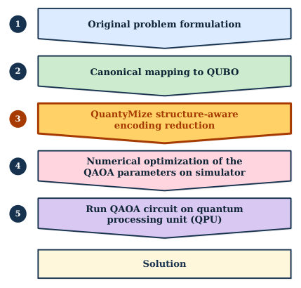
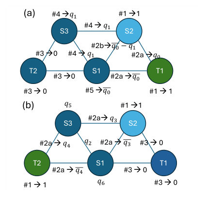
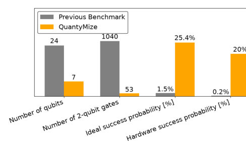
Summary. This work introduces a structure-aware encoding reduction technique to efficiently map complex routing problems onto quantum circuits, significantly reducing the required number of qubits and circuit complexity. By applying this reduction to a benchmark routing problem, the authors achieved a 100X improvement in success probability when running the model on a trapped-ion quantum computer. This demonstrates that careful problem formulation can make current quantum hardware much more effective for practical optimization tasks.
Why it may be interesting. While focused on quantum computation, the explicit benchmarking on trapped-ion hardware provides direct experimental validation of encoding efficiency, which is crucial for understanding the practical limits of quantum simulation.
Main problem. The paper addresses the critical resource overhead (qubit count and circuit size) when mapping complex logistics and routing problems onto quantum circuits for near-term quantum computers.
Main result. A structure-aware encoding reduction method was developed that substantially lowers the required qubit count (from 24 to 7 for a benchmark) and improved the success probability on a trapped-ion QPU by 100X.
Method. The core method involves applying deterministic, local logical rules to simplify the standard canonical QUBO encoding of graph problems, thereby reducing the number of necessary variables without altering the optimization objective.
Model / system. The problem is formulated as a QUBO model derived from graph optimization problems (like latency-resilient routing). Benchmarking was performed on a trapped-ion quantum computer, and the optimization was executed using QAOA circuits.
Key observables. Qubit count (reduction from 24 to 7), compiled circuit complexity (gates), and hardware success probability (100X improvement).
Important parameters / regimes. The penalty coefficient $\alpha=10$ was used to enforce constraints in the QUBO formulation.
Assumptions / limitations. The reduction rules are assumed to be local and deterministic, and the method's generalizability is claimed for other network and logistic problems.
Figures summary. Figure 1 illustrates the workflow showing the reduction from the original formulation to the reduced model. Figure 2 details the application of the five reduction rules to the benchmark case. Figure 3 compares the resource metrics (qubits, gates) between the canonical and reduced encodings.
Paper structure. The paper introduces the problem of resource overhead in quantum encoding, details the structure-aware reduction method using five specific rules, validates the reduction via exhaustive enumeration, and finally benchmarks the reduced model on a trapped-ion QPU, comparing results against the canonical encoding.
Qubits are powerful computational resources because each additional qubit doubles the size of the accessible state space. This expressive power comes at a cost: adding qubits also increases circuit size, constraint overhead, and exposure to hardware noise. These limitations are especially critical for near-term quantum computers, making the number of qubits required to formulate a problem a central practical concern. In this work, we present a method for efficiently mapping logistics and routing problems onto qubits through structure-aware encoding reduction. We demonstrate the method on a benchmark problem of latency-resilient routing under dual-link failures. For this benchmark, the reduced formulation substantially lowers both the qubit count and the compiled circuit complexity while preserving the original optimization task. By running the reduced model on the same trapped-ion quantum computer as the benchmark, we obtain a 100X improvement in the success probability. This finding shows how careful problem formulation can make current quantum hardware substantially more effective for practical optimization.
Authors: Eran Kopel
Type: theory · Category: quantum information and computing · PDF: https://arxiv.org/pdf/2610.13135v1
Analysis basis: full PDF text, analyzed in chunks
Topic relevance: correlated / nonlocal dissipation 3/5 · driven-dissipative phase transition 3/5 · methods for driven-dissipative 3/5 · Keldysh / 2PI / non-Gaussian methods 2/5 · non-equilibrium universality 2/5 · quantum measurements 2/5
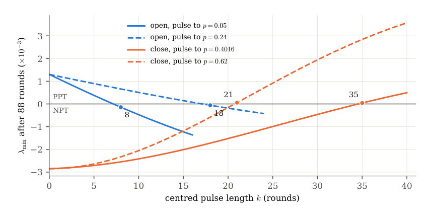
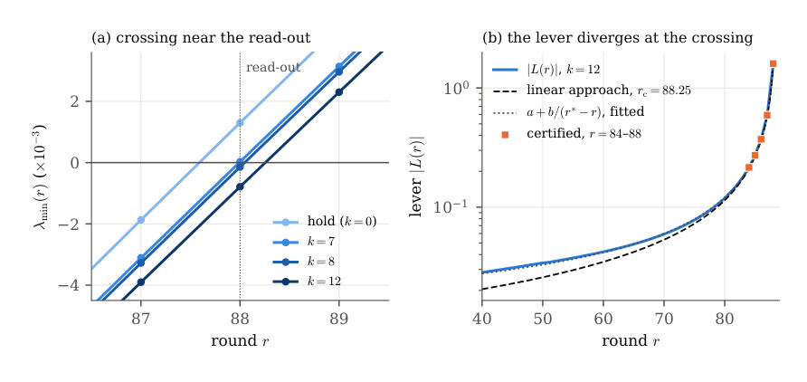
Summary. This theoretical work analyzes the entanglement-breaking index of a quantum channel controlled by varying bath polarizations. The authors identify a 'thermal valley' structure exhibiting a pronounced open-close asymmetry in how the entanglement switch can be manipulated. By using certified arithmetic, they provide rigorous bounds on these quantum resource diagnostics.
Why it may be interesting. The study provides a highly quantitative, certified framework for diagnosing subtle quantum resource properties (entanglement) in open quantum systems, which is crucial for designing robust quantum protocols.
Main problem. The paper investigates the entanglement-breaking index of a quantum channel, specifically analyzing how this index behaves when the channel is composed of rounds with varying bath polarizations.
Main result. A specific 'valve' structure was identified where entanglement can be restored by a precise, short pulse (8 rounds), demonstrating a significant open-close asymmetry compared to the cost of closing the valve (21-35 rounds).
Method. The analysis relies on rigorous mathematical certification using ball arithmetic (Arb) to determine the sign of the minimum eigenvalue of the partially transposed Choi matrix, diagnosing entanglement status.
Model / system. The system models a message qubit interacting with two ancillas in a three-qubit feedback circuit, where the interaction is controlled by a tunable bath polarization parameter, $p$.
Key observables. Entanglement-breaking index ($n_{EB}$), contrast of thermal valleys, and the minimum eigenvalue ($\lambda_{\min}$) of the partially transposed Choi matrix.
Important parameters / regimes. Bath polarization $p$ (ranging from 0 to 1), number of rounds ($n$), and the required pulse length for switching states.
Assumptions / limitations. The analysis assumes the channel action is affine in $p$, and the results are certified using high-precision arithmetic, though experimental realization requires extremely low error rates.
Figures summary. The notes reference tables detailing certified valley targets and a 'Pulse Atlas' quantifying the minimal pulse lengths required to switch the composite state between certified PPT (closed) and NPT (open) states.
Paper structure. The paper progresses by defining the entanglement-breaking index, searching for 'thermal valleys' in the index as a function of bath polarization, and culminating in a detailed analysis of the observed asymmetry between opening and closing the entanglement switch.
The entanglement-breaking index of a channel is the number of self-compositions after which all entanglement with a reference system is destroyed. In a thermal qubit collision loop whose round is affine in the bath polarisation p, some circuits have thermal valleys: on an interior window of p the index falls below its infinite-temperature value. Rounds at different p compose exactly, so every schedule of polarisations defines a composite channel whose entanglement-breaking status can be certified in ball arithmetic. A gated search of 33 million random circuits finds no valley with contrast above about 3e-3, with an interior maximum near index 90, and yields six certified targets. At the reference target, held inside its window for 88 rounds, a centred excursion to p = 0.05 restores entanglement at exactly eight rounds: every shorter centred pulse certifiably fails, and so do the same eight rounds at the start. A 53-round pulse certifiably beats the static protocol, a depth-three valley is walked down its staircase by pulse duration, and a 1.2 per cent coherent tilt of the ancilla opens the switch at fixed population. Closing the switch costs 21 to 35 rounds. The asymmetry is not one of local rates, which agree to within about two per cent at matched circuit positions (certified). It is one of distance and response: closing must remove an entanglement margin 2.2 times larger, and while hot rounds added to a window hold act almost independently, window rounds added to a hot hold act collectively. Near the crossing, the lever of the log-margin is that of a linear approach to the entanglement-breaking boundary, with no free parameter. At the reference target, depolarising noise of about $4ν/n$ per round kills a signature of size $ν$ read after $n$ rounds: 1.3e-4 for the static signal, 6.5e-6 for the eight-round switch.
Authors: Zheng Li
Type: theory · Category: statistical mechanics · PDF: https://arxiv.org/pdf/2610.13358v1
Analysis basis: full PDF text, analyzed in chunks
Topic relevance: driven-dissipative phase transition 3/5 · methods for driven-dissipative 3/5 · Keldysh / 2PI / non-Gaussian methods 2/5 · correlated / nonlocal dissipation 2/5 · non-equilibrium universality 2/5 · analog quantum simulation 1/5 · quantum measurements 1/5 · scars & prethermalization 1/5
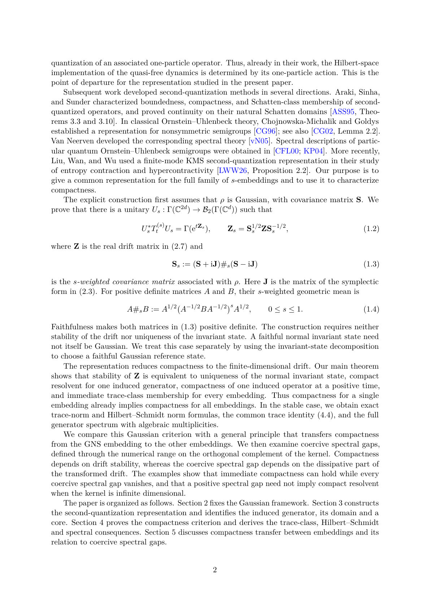
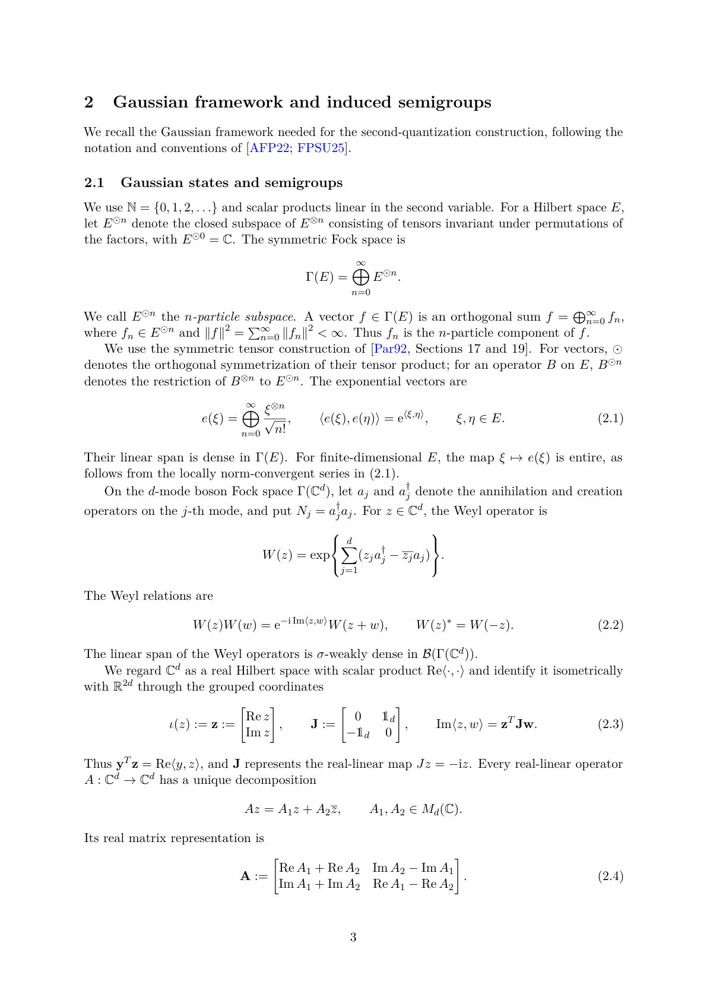
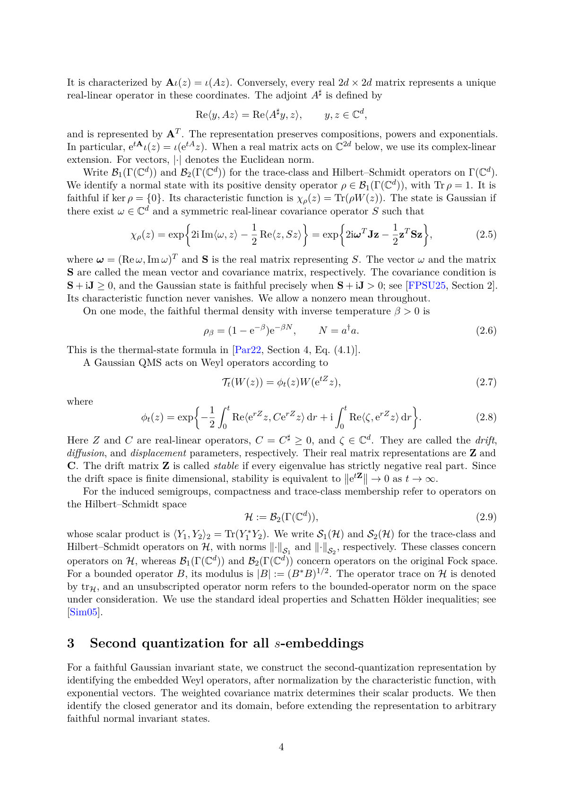
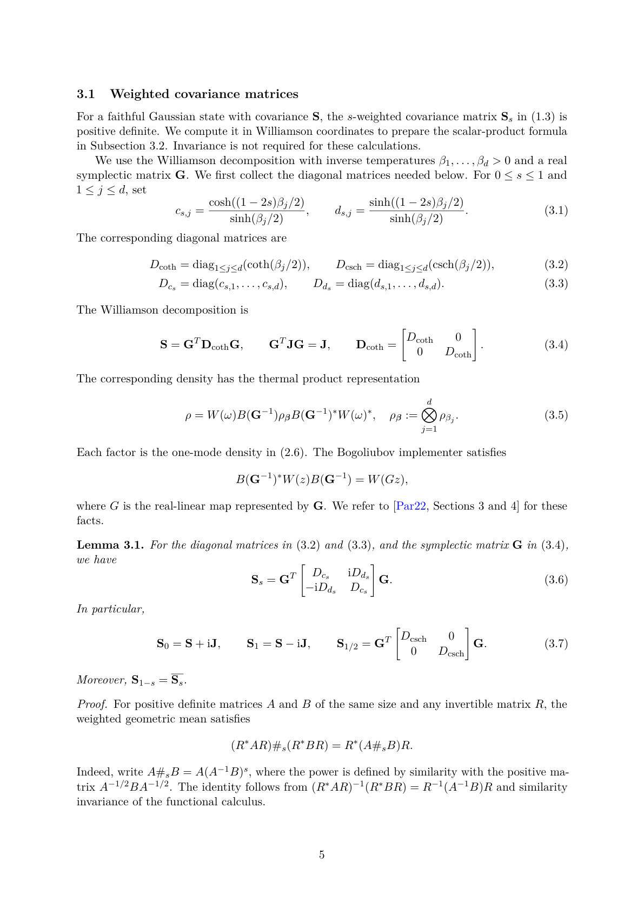
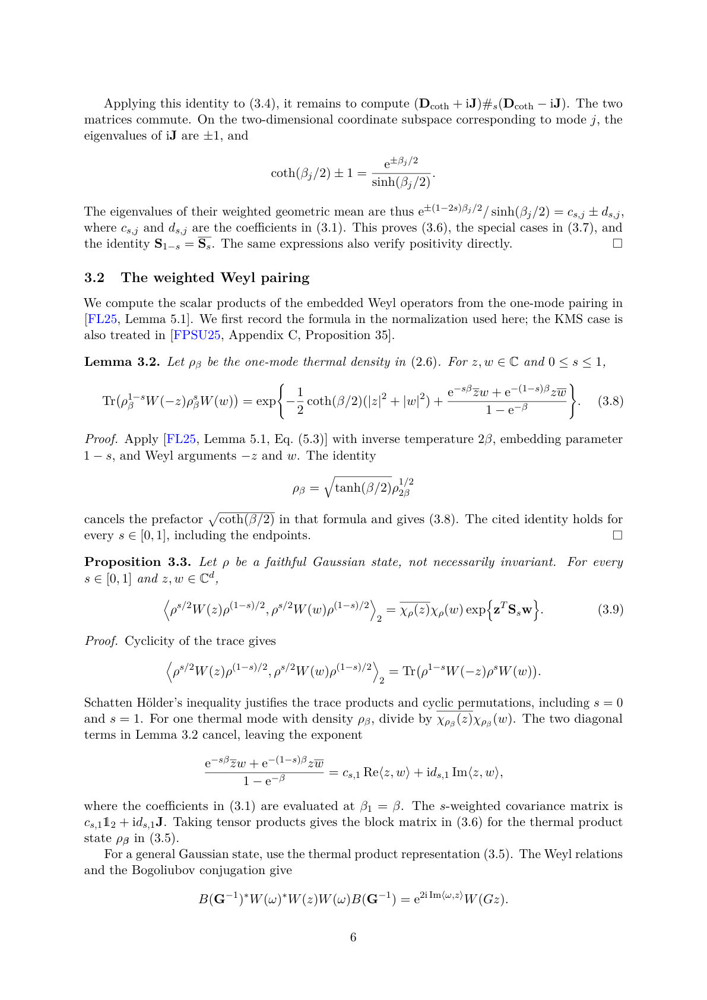
Summary. This theoretical paper analyzes Gaussian quantum Markov semigroups by characterizing the compactness of their induced semigroups. It proves that compactness is equivalent to several key stability conditions, such as having a compact resolvent and a unique invariant state. The methodology uses advanced second quantization techniques to derive explicit formulas for the spectrum and norms of the system's generator.
Why it may be interesting. This work provides rigorous mathematical tools to analyze the long-time behavior and stability of open quantum systems, which is crucial for understanding thermalization and dissipation in quantum many-body physics.
Main problem. The paper characterizes the compactness of Hilbert-Schmidt semigroups induced by finite-mode Gaussian quantum Markov semigroups and establishes equivalences between this compactness and other physical properties.
Main result. Compactness is equivalent to the compact resolvent, drift stability, and the uniqueness of the normal invariant state. Furthermore, the spectral properties of the generator are explicitly determined.
Method. The study employs second quantization techniques to analyze the induced semigroups, relating the quantum dynamics to properties of the associated one-particle operators and their weighted covariance matrices.
Model / system. The model concerns Gaussian quantum Markov semigroups (QMSs), which describe bosonic dynamics characterized by quadratic Hamiltonians and linear noise operators, acting on Fock spaces.
Key observables. The generator spectrum $\sigma(L(s))$, the spectral gap ($ ext{gap } L$), the resolvent operator $(L(s) - \lambda I)^{-1}$, and the induced semigroups $T^{(s)}_t$.
Important parameters / regimes. The embedding parameter $s \in [0, 1]$, which governs the relationship between different representations of the semigroup.
Assumptions / limitations. The analysis heavily relies on the Gaussian assumption for the invariant state, although results are extended to general faithful normal invariant states.
Figures summary. Not specified.
Paper structure. The paper proceeds by first establishing the equivalence of several stability and compactness conditions (Chunk 1). It then details the mathematical machinery using second quantization to calculate weighted covariance matrices and identify the generator on the Hilbert-Schmidt space (Chunk 2). Finally, it performs a detailed spectral analysis of the generator, comparing spectral gaps and resolvent properties (Chunks 3 & 4).
We characterize compactness of the Hilbert-Schmidt semigroups induced by finite-mode Gaussian quantum Markov semigroups with a faithful normal invariant state. A unitary second-quantization representation for every $ s $-embedding shows that compactness at one positive time, compact resolvent, drift stability, and uniqueness of the normal invariant state are equivalent. These conditions imply immediate trace-class membership for all embeddings. We derive exact trace-norm and Hilbert--Schmidt norm formulas, an embedding-independent trace identity, and the generator spectrum with algebraic multiplicities. Examples show that compactness does not require the existence of a spectral gap and that a spectral gap need not imply compactness when the invariant state is not unique.
Authors: Shuhang Chen, Qi Zhu
Type: theory · Category: disordered systems and neural networks · PDF: https://arxiv.org/pdf/2610.13538v1
Analysis basis: full PDF text, analyzed in chunks
Topic relevance: analog quantum simulation 3/5 · driven-dissipative phase transition 3/5 · methods for driven-dissipative 2/5 · non-equilibrium universality 2/5 · Frenkel-Kontorova 1/5 · Keldysh / 2PI / non-Gaussian methods 1/5 · interference shaping light 1/5
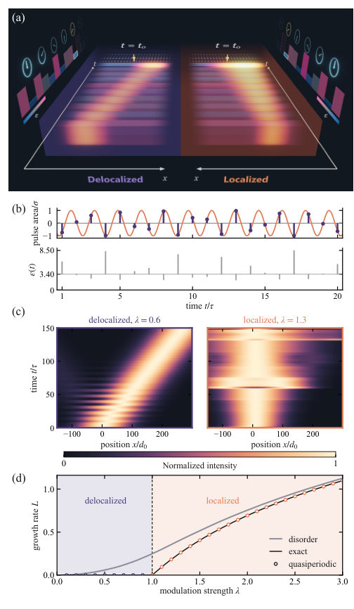
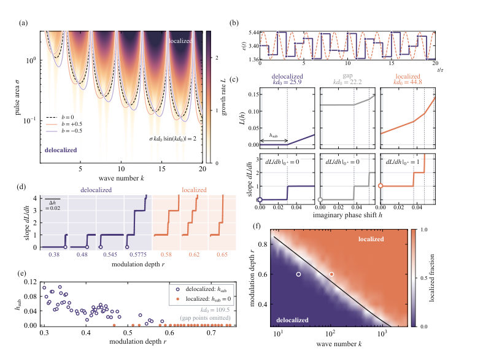
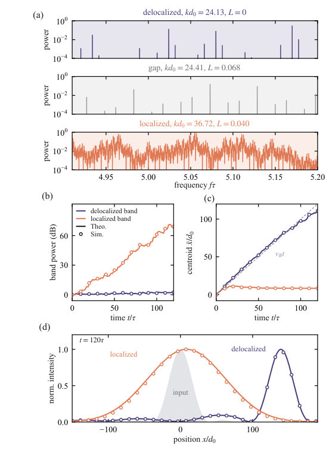
Summary. This paper proves the existence of the Aubry-André transition in photonic time quasicrystals, showing that wave localization occurs at specific momentum values (mobility edges) rather than just at critical modulation strengths. By extending established concepts from spatial lattices to the time domain, it offers deep insights into wave propagation control in time-varying photonic structures.
Why it may be interesting. This work bridges concepts from solid-state physics (Anderson/Aubry-André localization) into the time domain of photonics, providing a powerful tool for understanding wave transport in engineered time-varying media.
Main problem. The paper investigates the existence and nature of the Aubry-André transition in photonic time quasicrystals, extending the concept from spatial lattices to the time domain.
Main result. The Aubry-André transition is confirmed to exist in these time-modulated photonic systems, occurring at mobility edges in momentum space rather than in energy.
Method. The analysis employs transfer matrix methods, utilizing Avila's global theory and calculating the Lyapunov exponent (growth rate) across different modulation strengths and wave numbers.
Model / system. The system models light propagation in photonic time quasicrystals, where the permittivity is modulated periodically in time. The dynamics are governed by an equation related to the almost-Mathieu equation, analyzed via a transfer matrix approach.
Key observables. Lyapunov exponent (growth rate $L$), mobility edges in momentum, and Avila's acceleration ($ u$).
Important parameters / regimes. Modulation strength ($\lambda$), wave number ($k$), and the ratio of modulation contrast ($r$).
Assumptions / limitations. The analysis relies on the impulsive modulation limit (exact reduction to the Aubry-André model) and the use of Avila's theory for general analytic modulations.
Figures summary. Figures illustrate the transition using wave-packet intensity and growth rate vs. modulation strength, showing mobility edges in momentum space, and comparing power spectra for delocalized, gap, and localized wave numbers.
Paper structure. The paper establishes the physical analogy to the Aubry-André model, derives the governing equations, and then uses advanced mathematical tools (Avila's theory, Lyapunov exponents) to pinpoint the transition mechanism, showing it manifests as a momentum-dependent mobility edge.
In one dimension, Anderson localization by a disordered potential sets in at any strength, whereas localization by a quasiperiodic potential in the Aubry-André model occurs through a transition at a critical strength. Disordered photonic time crystals exhibit a temporal counterpart of this Anderson localization, in which light, instead of decaying in space, stops propagating and grows in time. Whether a counterpart of the Aubry-André transition exists in photonic time quasicrystals remains an open question. Here we show that it does, and that the transition occurs at mobility edges in momentum rather than in energy. These edges arise even under impulsive modulation, where the field obeys the self-dual almost-Mathieu equation exactly, and for general analytic modulations Avila's global theory reveals the condition under which they form. The Aubry-André transition thus extends from spatial lattices to the time domain, where it sorts light by wave number into components that propagate and components that stop and grow.
Authors: Julian Voits
Type: theory · Category: statistical mechanics · PDF: https://arxiv.org/pdf/2610.13505v1
Analysis basis: full PDF text, analyzed in chunks
Topic relevance: scars & prethermalization 3/5 · analog quantum simulation 2/5 · methods for driven-dissipative 2/5 · Keldysh / 2PI / non-Gaussian methods 1/5 · correlated / nonlocal dissipation 1/5 · driven-dissipative phase transition 1/5 · non-equilibrium universality 1/5 · quantum measurements 1/5
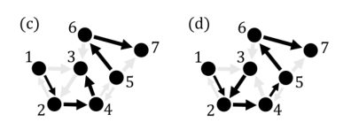
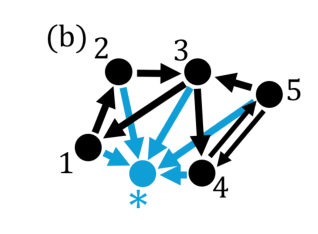
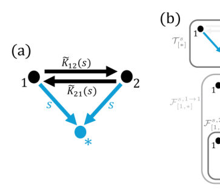
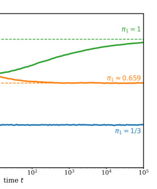
Summary. This paper introduces a powerful graph-theoretic framework to analyze semi-Markov networks, which model systems with non-exponential waiting times. It extends combinatorial results, such as those involving spanning trees, to derive explicit formulas for occupation probabilities and hitting times. This work is significant for understanding complex stochastic dynamics, particularly in regimes exhibiting weak ergodicity breaking.
Why it may be interesting. While the focus is on classical stochastic processes, the mathematical tools—especially the use of graph theory to solve complex linear systems derived from time-domain dynamics—are highly relevant to analyzing open quantum systems or quantum networks where non-Markovian dynamics are present.
Main problem. To develop a rigorous graph-theoretic framework for analyzing semi-Markov networks, extending established results from standard Markov chains to systems with non-exponential dwell times.
Main result. The framework successfully generalizes combinatorial representations (like those involving spanning trees) to semi-Markov networks, providing formulas for occupation probabilities and hitting times, and characterizing weak ergodicity breaking in heavy-tailed regimes.
Method. The analysis heavily relies on Laplace transforms, extending the Markov Chain Tree Theorem by replacing constant rates with memory kernels, and utilizing graph theory on an augmented graph to derive matrix inverses.
Model / system. The model is a semi-Markov network defined on a finite directed graph, characterized by non-exponential sojourn time distributions, which allows for complex stochastic transitions between coarse-grained states.
Key observables. Occupation probabilities (transient and stationary), hitting-time distributions and moments, and the characterization of weak ergodicity breaking via time-additive state observables.
Important parameters / regimes. The analysis distinguishes between finite-mean and infinite-mean sojourn times, and uses pseudo-rates derived from the inverse mean sojourn time.
Assumptions / limitations. The core extension assumes that the graph-theoretic structure generalizes naturally, unlike spectral methods, and the analysis often relies on Tauberian theorems for asymptotic limits.
Figures summary. Figures illustrate the graph structure, the construction of an augmented graph G* for analysis, and the convergence of occupation probabilities for both finite-mean (Gamma) and heavy-tailed (Pareto type II) cases.
Paper structure. The paper builds from defining the semi-Markov process and its Laplace transforms, deriving the generalized master equation using graph theory on an augmented graph, and finally applying these tools to calculate stationary limits, hitting times, and analyze weak ergodicity breaking.
Semi-Markov networks provide a natural framework for describing stochastic transitions between coarse-grained states with non-exponential dwell times, with applications ranging from biophysics and neuroscience to epidemiology and finance. Here, it is shown that finite semi-Markov networks admit explicit combinatorial representations of their Laplace-transformed occupation probabilities and hitting-time distributions as sums over weighted spanning trees and forests of an augmented graph. These representations yield asymptotic results, including a generalization of the Markov Chain Tree Theorem to semi-Markov networks, in which the rate constants replaced by pseudo-rates given by the inverse mean sojourn time weighted by the exit probability through this channel, as well as the long-time scaling of hitting-time survival probabilities in the presence of infinite-mean sojourn times. They also extend recently derived combinatorial formulas for hitting-time moments to the semi-Markov setting. In particular, the mean hitting-time formula coincides with that of a Markov network with the corresponding pseudo-rates, which also yields a short proof of the constancy of Kemeny's constant for finite-mean semi-Markov networks. Finally, we use the same framework to show that weak ergodicity breaking occurs generically for time-additive state observables that are nonconstant on the support of the limiting distribution in heavy-tailed semi-Markov networks.
Authors: Renato Pakter, Yan Levin
Type: theory · Category: statistical mechanics · PDF: https://arxiv.org/pdf/2610.13615v1
Analysis basis: full PDF text, analyzed in chunks
Topic relevance: Keldysh / 2PI / non-Gaussian methods 3/5 · non-equilibrium universality 3/5 · methods for driven-dissipative 2/5 · analog quantum simulation 1/5 · correlated / nonlocal dissipation 1/5 · driven-dissipative phase transition 1/5 · scars & prethermalization 1/5
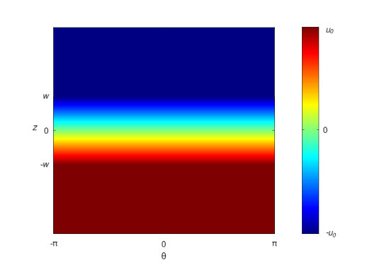
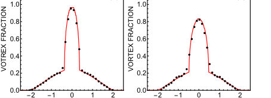
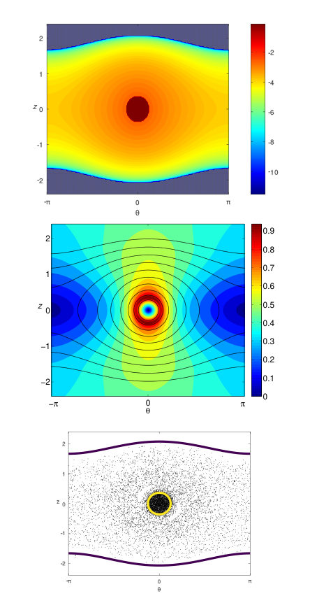
Summary. This work develops a non-equilibrium statistical mechanics framework to determine the final, stationary state of 2D Euler fluids after shear-induced turbulence. By analyzing the Vlasov dynamics, the authors predict that the system relaxes into a universal core-halo structure, rather than reaching a simple equilibrium state. This provides a powerful, general framework for understanding turbulence saturation in inviscid fluids.
Why it may be interesting. While focused on classical fluid dynamics, the use of non-equilibrium statistical mechanics, Vlasov dynamics, and the concept of universal asymptotic states mirrors theoretical approaches used in analyzing complex quantum many-body systems far from equilibrium.
Main problem. The paper aims to predict the final stationary state to which a sheared 2D Euler fluid relaxes after undergoing the Kelvin-Helmholtz (KH) instability.
Main result. The relaxation process leads to a robust core-halo structure, which is established as a universal statistical consequence of shear-induced turbulence saturation.
Method. The authors employ a general non-equilibrium statistical mechanics framework, constructing a self-consistent ansatz solution for the Vlasov equation to bypass solving the time-dependent Euler equations.
Model / system. The system is an incompressible 2D Euler fluid analyzed in the thermodynamic limit, modeled using a Vlasov-Poisson framework for the vortex gas dynamics.
Key observables. The final stationary vorticity distribution, characterized by a population-inverted core and a tenuous halo.
Important parameters / regimes. The shear rate ($w/R$) and the initial vortex density ($\eta_0$) are key parameters governing the instability and relaxation.
Assumptions / limitations. The analysis moves beyond standard Boltzmann-Gibbs equilibrium assumptions, and the core-halo ansatz assumes constant core density and a linear halo dependence on the stream function.
Figures summary. Figures illustrate the initial velocity field, the temporal evolution showing core-halo formation, Poincaré maps showing bounded chaotic diffusion, and comparisons between theoretical core-halo predictions and Molecular Dynamics simulations.
Paper structure. The paper establishes the problem using the 2D Euler equations and KH instability, develops a non-equilibrium statistical mechanics framework using the Vlasov equation, derives the self-consistent core-halo ansatz, and validates the results against MD simulations.
The Kelvin-Helmholtz (KH) instability is a fundamental signature of the natural world, manifesting in phenomena ranging from atmospheric clouds to the iconic turbulence of Jupiter's Great Red Spot. While the linear dynamics of this instability is well-understood, the ultimate fate of the fluid --- the final stationary state to which it relaxes --- remains a formidable challenge. In this paper, we present a general non-equilibrium statistical mechanics framework that allows us to predict the asymptotic vorticity distribution of a sheared 2D Euler fluid. By constructing a self-consistent ansatz for the solution of the Vlasov equation, we determine the stationary stream function without explicitly solving the time-dependent Euler equations. We demonstrate that the relaxation leads to a population-inverted core, where high-energy states are fully occupied, surrounded by a tenuous halo of vortices in the lower-energy regions of configuration space. This result establishes the core-halo structure as a robust statistical consequence of the system's evolution, offering a universal framework for understanding the saturation of shear-induced turbulence in inviscid 2D fluids.
Authors: Ryusei Okaniwa, Rui Suzuki, Yuichiro Matsuzaki, Norio Tokuda, Junko Ishi-Hayase
Type: experiment · Category: other · PDF: https://arxiv.org/pdf/2610.13153v1
Analysis basis: full PDF text, analyzed in chunks
Topic relevance: QC/QI experiment 3/5 · quantum measurements 3/5 · quantum optics experiment 2/5 · analog quantum simulation 1/5
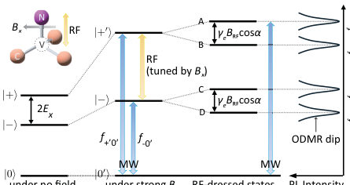
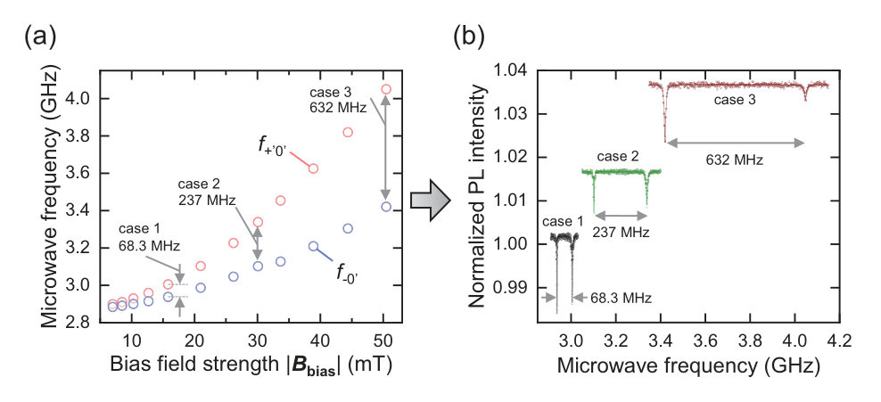
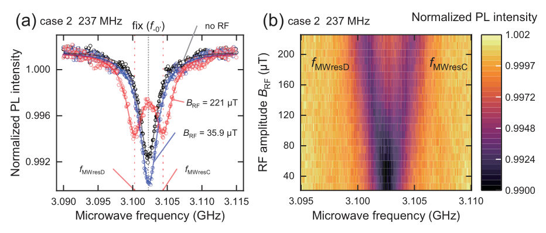
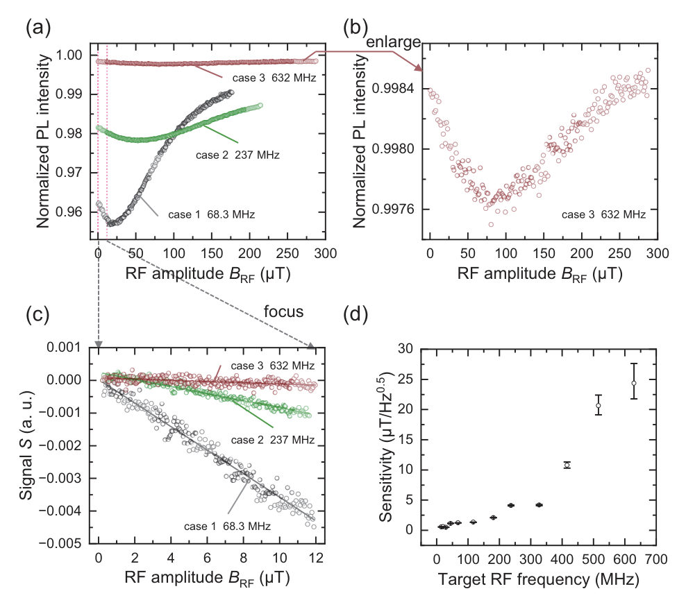
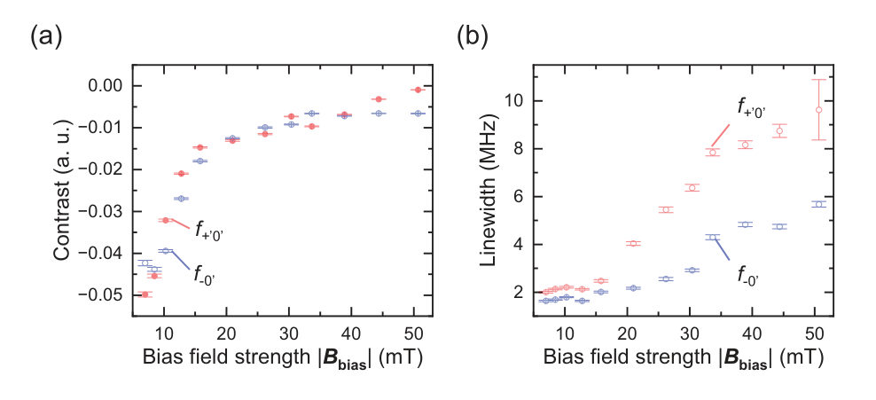
Summary. This paper introduces a novel, continuous-wave technique for AC magnetometry using NV centers in diamond, circumventing the need for high-power microwave pulses. By applying a strong transverse magnetic field, the system forms tunable RF-dressed states, enabling the detection of magnetic fields up to hundreds of MHz. This establishes a simple, widely tunable quantum sensing method for magnetic field measurements.
Why it may be interesting. This work provides a robust, non-pulsed quantum sensing platform for magnetic fields, directly relevant to open quantum systems and quantum optics by utilizing coherent control (dressing) in a solid-state solid-state quantum sensor.
Main problem. To develop a high-frequency AC magnetometry technique using Nitrogen-Vacancy (NV) centers that avoids the technical difficulties associated with high-power microwave pulses.
Main result. The authors successfully demonstrated frequency-tunable detection of AC magnetic fields across a wide range (14.4–632 MHz) using a continuous-wave optically detected magnetic resonance (CW-ODMR) approach.
Method. The technique relies on creating RF-dressed states by applying a strong static transverse magnetic field ($B_x$) to tune the energy separation between NV electron spin states, allowing detection via CW-ODMR.
Model / system. The physical system is the NV center in diamond, whose electron spin Hamiltonian is analyzed. The method involves diagonalizing the total Hamiltonian, which includes terms for strain, static magnetic fields, and the applied microwave/RF driving fields.
Key observables. AC magnetic field frequency range (14.4–632 MHz), sensitivity ($\mu ext{T}/\sqrt{ ext{Hz}}$), ODMR contrast, and linewidth.
Important parameters / regimes. Strong transverse magnetic field ($B_x$), bias magnetic field strength, and the frequency range of the target AC field.
Assumptions / limitations. The method is limited by the degradation of ODMR contrast and linewidth at large transverse fields, which is a key factor limiting high-frequency sensitivity.
Figures summary. Figures illustrate the energy level diagrams showing the formation of RF-dressed states, the spectral dips observed under RF irradiation, and the dependence of sensitivity on the bias field strength.
Paper structure. The paper progresses from identifying the limitations of pulsed magnetometry to proposing the CW-ODMR approach. It details the theoretical framework involving Hamiltonian diagonalization, presents experimental measurements across a wide frequency range, and analyzes the sources of sensitivity degradation.
Nitrogen-vacancy (NV) centers in diamond are promising quantum sensors for AC magnetic fields. However, conventional dynamical-decoupling-based magnetometry becomes technically demanding at high frequencies because of the requirement for increasingly short and high-power microwave pulses. This paper describes an AC magnetometry technique based on continuous-wave optically detected magnetic resonance (CW-ODMR) measurements, which enables the detection of signals in the hundred-MHz range. By applying a strong static magnetic field transverse to the NV axis, the energy separation between the relevant electron-spin states was tuned and resonantly coupled with the target radiofrequency (RF) magnetic field, thereby forming RF-dressed states. Unlike pulsed dynamical-decoupling schemes, this approach does not require high-power microwave pulse sequences. The key feature of our method is that the detectable frequency can be tuned by controlling the bias magnetic field strength. Using this methodology, we have experimentally achieved the frequency-tunable detection of AC magnetic fields from 14.4-632 MHz. The sensitivity was 0.558 uT/Hz^(0.5) at 14.4 MHz and 24.4 uT/Hz^(0.5) at 632 MHz. We characterized the field-dependent ODMR contrast and linewidth, and found that their degradation at large transverse fields is a important factor limiting the high-frequency sensitivity. These results establish a simple CW-ODMR approach for widely tunable RF magnetic-field sensing without high-power pulsed spin control.
Authors: Alexis Wietzke, Solen Coeymans, Benjamin Hue, Simon Messelot, Aurelien Schmitt, Michael Rosticher, Kenji Watanabe, Takashi Taniguchi, Jerome Tignon, Sukhdeep Dhillon, Rebeca Ribeiro, Audrey Cottet, Matthieu Delbecq, Takis Kontos, Juliette Mangeney
Type: both · Category: other · PDF: https://arxiv.org/pdf/2610.13196v1
Analysis basis: full PDF text, analyzed in chunks
Topic relevance: Keldysh / 2PI / non-Gaussian methods 3/5 · methods for driven-dissipative 3/5 · analog quantum simulation 2/5 · quantum measurements 1/5
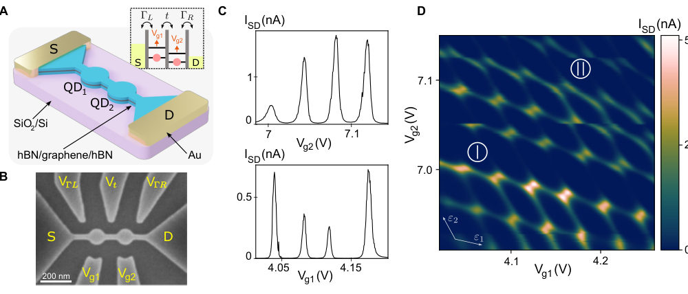
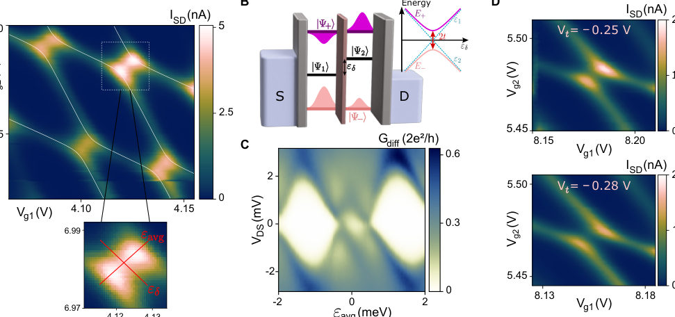
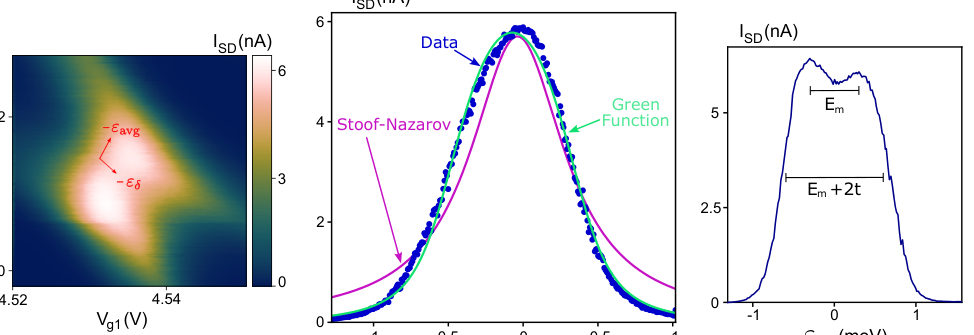
Summary. This paper reports the realization of a THz two-level quantum system using an hBN-encapsulated graphene double quantum dot. By combining low-temperature transport measurements with advanced Green's function theory, the authors successfully characterized the system's molecular-like bonding/antibonding states, achieving a resonance frequency of 0.145 THz. This platform offers a practical, integrable solid-state building block for future THz quantum technologies.
Why it may be interesting. This work directly addresses the intersection of solid-state quantum physics and THz quantum optics, providing a solid-state platform compatible with on-chip integration for exploring fundamental light-matter interactions.
Main problem. The goal is to extend the transition frequency of matter-based two-level quantum systems from the microwave/optical domain into the Terahertz (THz) spectral range to exploit unique THz properties for quantum technologies.
Main result. The authors demonstrate that an hBN-encapsulated graphene double quantum dot realizes a two-level system with a measurable transition frequency of $\sim 0.145$ THz.
Method. The study combines low-temperature transport spectroscopy in the dark with theoretical modeling using the nonequilibrium Green's function formalism.
Model / system. The physical system is an hBN-encapsulated graphene double quantum dot (DQD) acting as an artificial molecule. The analysis models the system's charge transport and energy level hybridization using advanced quantum transport theory.
Key observables. Source-drain current ($I_{SD}$), differential conductance ($G_{diff}$), and the energy separation between bonding and antibonding molecular states.
Important parameters / regimes. Tunneling rates ($\Gamma_L, t, \Gamma_R$), charging energies, and the resonance frequency ($\sim 0.145$ THz).
Assumptions / limitations. The analysis relies on the DQD structure to create a tunable two-level system, and the use of Green's functions is necessary to analyze transport beyond the simple sequential tunneling limit.
Figures summary. Figures illustrate the DQD device architecture, the charge stability diagram showing the honeycomb pattern, and energy level diagrams confirming the formation of the artificial molecule and its THz resonance.
Paper structure. The paper progresses from establishing the need for THz quantum systems, detailing the DQD realization and measurement techniques (transport spectroscopy), and finally using theoretical modeling (Green's functions) to extract key parameters like the interdot coupling strength and resonance frequency.
Matter-based two-level quantum systems are fundamental building blocks of quantum technologies, underpinning applications in quantum computing, simulation, communication, and sensing. Today, most of these two-level quantum systems, including Rydberg atoms, trapped ions, superconducting circuits, molecules, and quantum dots, involve transition frequencies in microwave or optical domains. However, extending their transition frequency to the THz spectral range could provide numerous benefits, leveraging the unique properties of THz radiation. Here, we show that an hBN-encapsulated graphene double quantum dot realizes a two-level system with a transition frequency in the THz spectral range. Using low-temperature transport spectroscopy in the dark combined with modeling based on nonequilibrium Green's function formalism, we demonstrate the formation of an artificial molecule, featuring bonding and antibonding states separated by an energy of up to 0.6 meV, corresponding to a resonance frequency of 0.145 THz. This approach provides direct access to important parameters of open double quantum dot systems, including tunneling rates, offering a practical alternative to conventional techniques such as photon-assisted tunneling, which are challenging to implement at THz frequencies. The realized 2D-material-based THz two-level system, compatible with direct on-chip integration, could serve as a key building block for future THz quantum technologies. Furthermore, by involving a single-electron transition, coupling these devices to a THz resonator could enable the exploration of ultra-strong light-matter interactions at the fundamental limit of a single transition coupled to a single cavity, beyond the reach of existing THz quantum systems based on collective transitions.
Authors: Nicholas Lester Jobbitt, Sascha Weis, Timo Schweizer, Vishnu Unni Chorakkunnath, Evgenij Vasilenko, Tobias Haas, Barbora Brachnakova, Senthil Kumar Kuppusamy, Hartmut Schubert, Mario Ruben, Michael Seitz, David Hunger
Type: experiment · Category: quantum information and computing · PDF: https://arxiv.org/pdf/2610.13664v1
Analysis basis: full PDF text, analyzed in chunks
Topic relevance: QC/QI experiment 3/5 · quantum optics experiment 3/5 · interference shaping light 1/5 · quantum measurements 1/5
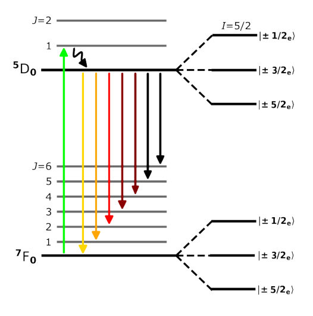
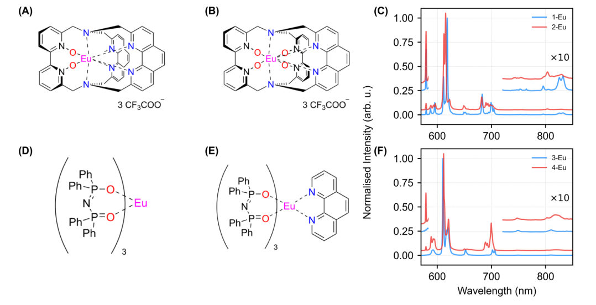
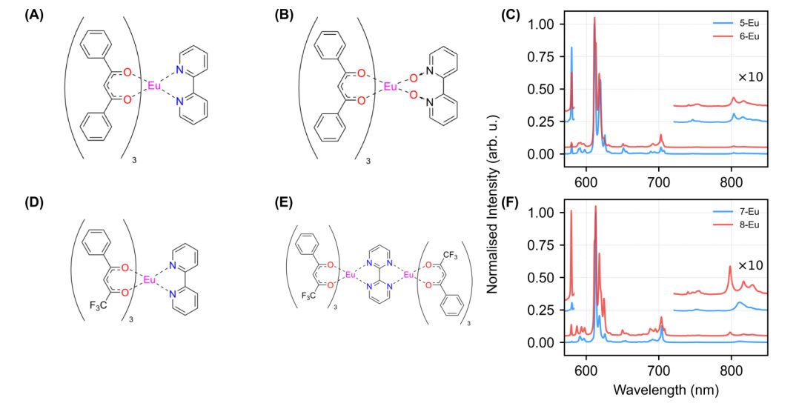
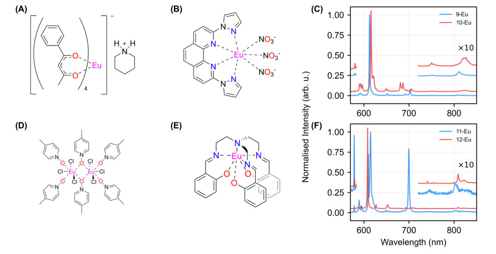
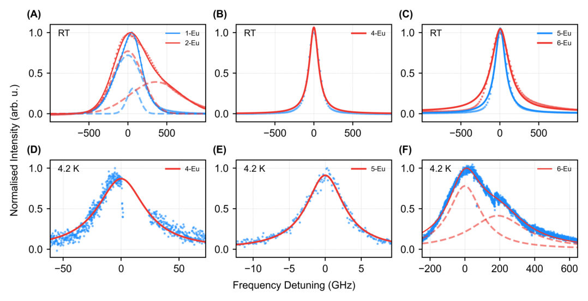
Summary. This research characterizes $ ext{Eu}^{3+}$-based molecular complexes to optimize them for quantum information applications. By combining Judd-Ofelt analysis with advanced optical coherence measurements, the authors establish that lower local symmetry enhances the key transition's strength. The findings provide crucial guidelines for designing highly coherent solid-state quantum emitters.
Why it may be interesting. This work directly addresses the development of solid-state quantum emitters, providing structure-property relationships that guide the rational design of materials for quantum memory and quantum networking applications.
Main problem. To develop rare-earth-ion based molecular complexes as a promising platform for quantum information applications by understanding and enhancing their optical coherence.
Main result. Lower point-group symmetry ($ ext{C}_1, ext{C}_2$) significantly increases the branching ratio of the coherent $^5D_0 ightarrow ^7F_0$ transition, and some complexes exhibit optical coherence times ($T_{ ext{2}}^{ ext{opt}}$) up to $2.3 \mu ext{s}$ at $4.2 ext{ K}$.
Method. The study combines comprehensive optical characterization, Judd-Ofelt analyses to probe local symmetry, and advanced coherence measurements like two-pulse photon echo and spectral-hole burning.
Model / system. The physical system is $ ext{Eu}^{3+}$-based molecular complexes, utilizing the highly coherent $^5D_0 ightarrow ^7F_0$ transition ($\sim 580 ext{ nm}$) as the quantum emitter. The analysis relies on crystal field theory and Judd-Ofelt parameters to link structure to optical properties.
Key observables. Optical coherence time ($T_{ ext{2}}^{ ext{opt}}$), branching ratios, inhomogeneous linewidths, and the ratio of electric-dipole to magnetic-dipole transition strengths.
Important parameters / regimes. Low point-group symmetry ($ ext{C}_1, ext{C}_2$), cryogenic temperature ($4.2 ext{ K}$), and the crystal field environment.
Assumptions / limitations. Judd-Ofelt theory is used, though the authors note its limitation in fully accounting for state mixing crucial for the nominally forbidden transition.
Figures summary. Figures illustrate the $ ext{Eu}^{3+}$ energy levels and the measured coherence times/branching ratios for various complexes, comparing different measurement techniques (e.g., photon echo vs. spectral hole burning).
Paper structure. The paper systematically characterizes twelve complexes, performing Judd-Ofelt analyses to deduce local symmetry, measuring linewidths to assess crystalline order, and finally performing coherence measurements to quantify quantum memory potential.
Rare-earth-ion based molecular crystals are emerging as a promising platform for quantum information applications, combining long optical coherence times with the chemical tunability of coordination chemistry. Here we present a comprehensive optical characterisation of twelve Eu$^{3+}$-based molecular complexes, with a focus on the coherent $^{5}\text{D}_{0} \longrightarrow \ ^{7}\text{F}_{0}$ transition at $\sim$580 nm. Judd-Ofelt analyses are performed across all complexes, providing insights into ligand-field environments, local point-group symmetries, and the resulting branching ratios of the coherent transition. We find that lower point-group symmetry (C$_1$, C$_2$) yields higher branching ratios of the $^{5}\text{D}_{0} \longrightarrow \ ^{7}\text{F}_{0}$ transition, exceeding 1\% in several complexes. Optical inhomogeneous linewidths measured at 4.2 K reveal narrow linewidths for some complexes of below ten GHz, indicative of a highly ordered crystalline environment. Optical coherence measurements of one of the complexes, 5-Eu, yields an optical coherence time of $T_{\text{2}}^{\text{opt}} = 2.3~μ\mathrm{s}$ at 4.2 K, comparable to the best-performing molecular systems reported to date. Systematic characterisation and quantitative comparison will be key to find structure-property relations guiding rational design of optimised complexes for quantum information applications.
Authors: Carla Rubiliani, Marius Wesle, Tom Wessel
Type: theory · Category: statistical mechanics · PDF: https://arxiv.org/pdf/2610.12731v1
Analysis basis: full PDF text, analyzed in chunks
Topic relevance: methods for driven-dissipative 3/5 · Keldysh / 2PI / non-Gaussian methods 1/5 · analog quantum simulation 1/5 · correlated / nonlocal dissipation 1/5 · driven-dissipative phase transition 1/5 · non-equilibrium universality 1/5
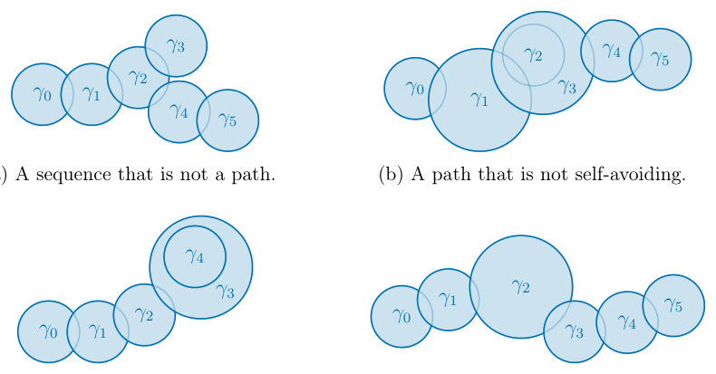
Summary. This paper introduces an adaptive Dyson expansion technique to analyze time evolution in quantum spin systems undergoing irreversible dynamics. By expanding commutators using self-avoiding paths, the authors derive Lieb-Robinson bounds that are remarkably general, holding true regardless of the specific Hamiltonian or dissipative terms used to generate the evolution.
Why it may be interesting. This work provides a powerful, general mathematical tool to prove locality bounds for open quantum systems, which is crucial for understanding thermalization and correlation spreading in many-body physics.
Main problem. The paper aims to derive Lieb-Robinson bounds for the dynamics of quantum spin systems, specifically extending these bounds to cover irreversible dynamics.
Main result. A novel adaptive Dyson expansion is developed that yields Lieb-Robinson bounds independent of the specific Hamiltonian or dissipative on-site terms generating the dynamics.
Method. The core method involves constructing an adaptive Dyson expansion for commutators using sums over self-avoiding paths of sets, which then directly implies the locality bounds.
Model / system. The study focuses on quantum spin systems evolving under time-dependent and irreversible dynamics, modeled by local, time-dependent dissipative terms (Lindbladian dynamics is a special case).
Key observables. Lieb-Robinson bounds, which quantify the finite speed of propagation of quantum correlations, and the norm of the commutator $\left\|[A, au_{s,t} B] ight\|$.
Important parameters / regimes. The time separation ($t-s$), the distance between local regions ($d(X,Y)$), and the structure of the dissipative generator $\Phi$.
Assumptions / limitations. The dynamics are generated by local, time-dependent dissipative terms, and the method relies on the algebraic framework of a quasi-local algebra.
Figures summary. Not specified.
Paper structure. The paper follows a two-step structure: first, deriving the adaptive Dyson expansion for the commutator, and second, using this expansion to derive the Lieb-Robinson bounds.
In this note, we study a broad class of time-dependent and irreversible dynamics for quantum spin systems in both finite and infinite volume. We develop a simple and flexible strategy for expanding commutators of the form $[A,τ_{s,t} \, B]$ in terms of self-avoiding paths of sets, where $A$ and $B$ are local operators and $τ_{s,t}$ is the Heisenberg time evolution. This adaptive Dyson expansion requires no backwards time evolution and is thus also applicable to irreversible dynamics. Furthermore, we discuss how such an expansion directly implies Lieb-Robinson bounds. A central feature of our result is that the obtained Lieb-Robinson bounds are independent of any Hamiltonian and dissipative on-site terms of the generator.
Authors: Deniz Yunus Göğüş
Type: both · Category: quantum information and computing · PDF: https://arxiv.org/pdf/2610.12806v1
Analysis basis: full PDF text, analyzed in chunks
Topic relevance: methods for driven-dissipative 3/5 · quantum measurements 2/5 · QC/QI experiment 1/5 · correlated / nonlocal dissipation 1/5 · driven-dissipative phase transition 1/5
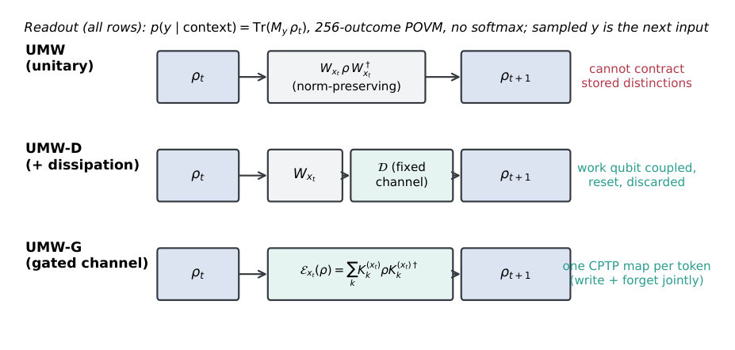
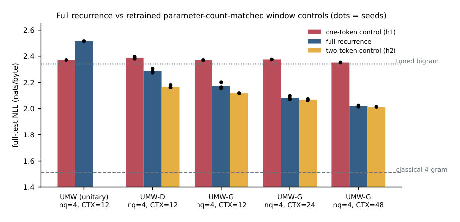
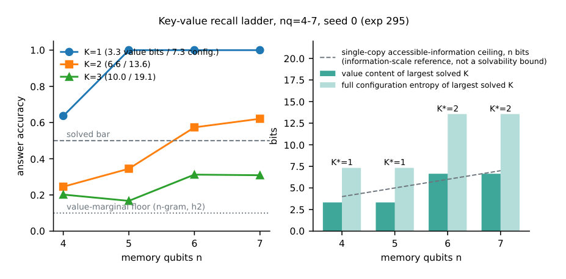
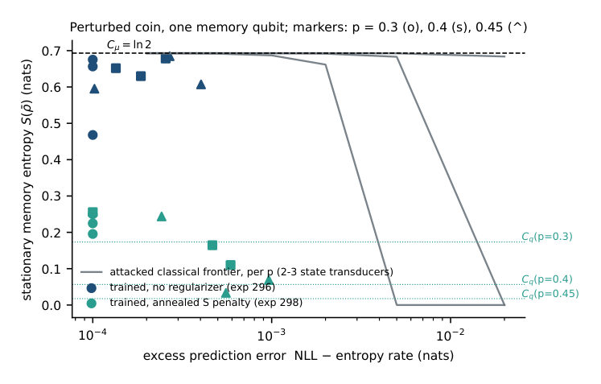
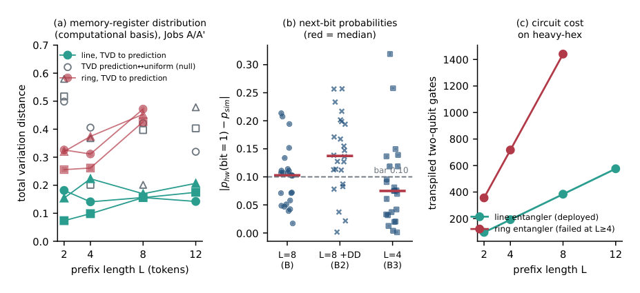
Summary. This paper proposes and tests quantum-native language models where the memory state is a small quantum register whose evolution is controlled by learned quantum channels. By incorporating dissipation, the model achieves useful, context-dependent memory, demonstrating performance gains over purely unitary approaches. The work validates this architecture end-to-end on quantum hardware while concluding that no computational quantum advantage is demonstrated over classical baselines.
Why it may be interesting. The work directly addresses how non-unitary, dissipative dynamics—which are central to open quantum systems theory—can be engineered into a functional, trainable computational primitive for complex tasks like language modeling.
Main problem. The paper investigates the necessary memory dynamics for trainable quantum-native recurrent language models, assessing their capacity limits and validating the architecture on current quantum hardware.
Main result. Introducing learned, token-conditioned dissipation significantly improves memory retention over purely unitary dynamics, allowing the model to solve key-value recall tasks up to two stored pairs using a small quantum register.
Method. The authors train the model by minimizing the negative log-likelihood of the next byte, using quantum channels (CPTP maps) to govern the state evolution and direct Born-rule measurements for output probabilities.
Model / system. The model uses a small quantum register ($ ho_t$) as its hidden state, with transitions governed by learned, token-conditioned quantum channels. The output probability is read directly from the measurement expectation value, bypassing classical vocabulary projections.
Key observables. Negative log-likelihood (NLL) improvement (e.g., +0.20 nats/byte), key-value recall accuracy (e.g., 2 pairs at 6-7 qubits), and physical measurement of bit probabilities on hardware.
Important parameters / regimes. Context length (up to 12 tokens), quantum register width (4-7 qubits), and the comparison between unitary vs. dissipative channels.
Assumptions / limitations. The tested models are classically simulable at the tested widths, and the primary limitation is an empirical two-token memory horizon, not a proven fundamental capacity law.
Figures summary. The notes detail comparisons between different memory dynamics (unitary vs. dissipative) and show quantitative performance gains across various context lengths and memory tasks.
Paper structure. The paper progresses by first establishing the failure of unitary recurrence, then introducing and testing learned dissipation/gating mechanisms, benchmarking memory capacity via key-value recall, and finally validating the full pipeline on real quantum hardware.
We study byte-level autoregressive language models whose hidden state is a small quantum register, whose transitions are learned token-conditioned quantum channels, and whose next-byte probabilities come directly from Born-rule measurements without a learned classical vocabulary projection or softmax. In the fixed-width recurrent setting, unitary dynamics cannot contract or reset stored distinctions; experimentally, unitary recurrence loses to its retrained one-token control in every tested variant. Introducing learned dissipation, then token-conditioned dissipative gating, yields useful memory beyond one token. The gated model improves test negative log-likelihood by 0.20 +/- 0.03 nats/byte over retrained parameter-matched one-token controls at context length 12, and by 0.29-0.33 at longer contexts, but never beats retrained two-token controls. A key-value recall benchmark shows a width-dependent threshold: one stored pair meets the pre-registered accuracy bar at 4-5 memory qubits, two pairs at 6-7, and three pairs remain unsolved. This is consistent with, but does not establish, a capacity explanation for the short effective memory horizon. As a secondary result, one-qubit models reach lower stationary memory entropy than a heuristically optimized classical predictive frontier at matched error in 9/9 seeds. On IBM Heron hardware, computational-basis memory-register distributions show signal against a uniform null in 12/12 circuits across prefixes of up to 12 tokens, next-bit probabilities pass pre-registered accuracy bars at four-token prefixes, and bytes are generated autoregressively by sampling physically measured bit probabilities. The tested models are classically simulable and substantially worse than classical n-gram baselines. We claim no computational quantum advantage.
Authors: V. Yu. Irkhin
Type: theory · Category: strongly correlated electrons · PDF: https://arxiv.org/pdf/2610.13666v1
Analysis basis: full PDF text, analyzed in chunks
Topic relevance: Keldysh / 2PI / non-Gaussian methods 3/5 · analog quantum simulation 2/5 · methods for driven-dissipative 2/5
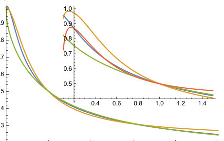
Summary. This paper presents a novel analytical framework for the Kondo effect crossover by mapping the physics onto the distribution of Lee-Yang zeros in the complex plane. It derives the universal crossover backbone using the Gamma function and provides a generalized, compact description applicable to various impurity models. This offers a powerful mathematical tool for understanding quantum impurity scattering beyond standard approximations.
Why it may be interesting. The rigorous mathematical machinery involving complex zeros (Lee-Yang zeros) to describe a crossover phenomenon is highly sophisticated and applicable to understanding quantum critical points or spectral features in strongly correlated systems, which is relevant to AMO physics when considering impurity coupling.
Main problem. The paper aims to develop a rigorous analytical theory to describe the full temperature crossover of the Kondo effect, moving beyond existing approximations.
Main result. The crossover backbone is found to be governed by the Gamma function $\Gamma(\alpha + T_K/(2 \pi T))$, and the method provides a compact, one-parameter description via a Fano lineshape.
Method. The approach utilizes an effective partition function generalizing the sophomore's dream integral, modeling the crossover via the passage through an equidistant ladder of Lee-Yang zeros in the complex plane.
Model / system. The primary system is the Kondo model, extended to $\mathrm{SU}(N)$ and including underscreened and Anderson impurity models. The analysis focuses on the temperature dependence of the effective coupling constant.
Key observables. Resistivity ratio ($ ho_{NS}/ ho_u$), free energy $F(T)$, and the scattering phase shift $\delta(T)$.
Important parameters / regimes. Kondo temperature ($T_K$), Friedel sum rule offset ($\alpha=1/2$), and the temperature-dependent trajectory $t(T)$.
Assumptions / limitations. The partition function is treated as an effective approximation, and the crossover is characterized by the structure of Lee-Yang zeros rather than a real-axis singularity.
Figures summary. Figure 1 compares the calculated relative resistivity $ ho(T)/ ho_u$ using a derived formula against the standard Hamann approximation.
Paper structure. The paper builds from defining the effective partition function and relating the crossover to Lee-Yang zeros, deriving the universal Gamma function backbone, connecting this to Fermi-liquid theory via Euler-Maclaurin, and finally extending the formalism to various impurity models and lattice systems.
We develop an analytical approach to the Kondo problem based on an effective partition function that generalizes the sophomore's dream integral. The Kondo crossover is represented as a passage through an approximately equidistant ladder of its Lee-Yang zeros in the complex plane, rather than as a singularity on the real axis. Summation over this ladder yields the Gamma function $Γ(α+ T_K/(2 πT))$ as the universal crossover backbone, where the offset $α=1/2$ is fixed by the Friedel sum rule. The Euler-Maclaurin expansion connects the discrete zero structure to the Nozieres Fermi-liquid theory through Bernoulli numbers. A two-cutoff formula provides a compact, essentially one-parameter description of the full crossover in terms of a temperature-space Fano lineshape which is a thermal average of the energy-space Fano resonance observed in STM. Drift corrections are treated. The approach extends to $\mathrm{SU}(N)$ Coqblin-Schrieffer, underscreened and Anderson impurity models, and Kondo lattices.
Authors: Lu Fan, Xuesong Xu, Miao Yu, Zhengyu Li, Yunsong Yin, Hao Shi, Xuanyu Guo, Song Yu, Yichen Zhang
Type: experiment · Category: quantum information and computing · PDF: https://arxiv.org/pdf/2610.13090v1
Analysis basis: full PDF text, analyzed in chunks
Topic relevance: quantum optics experiment 3/5 · interference shaping light 2/5 · QC/QI experiment 1/5 · quantum measurements 1/5
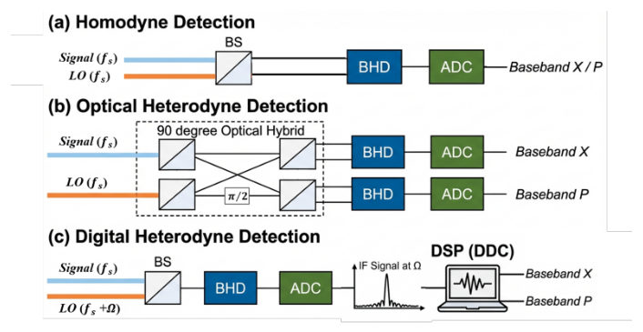
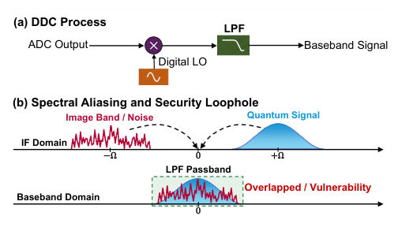
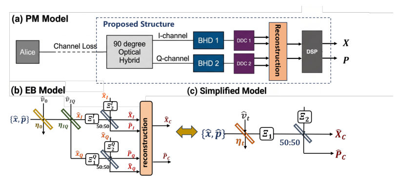
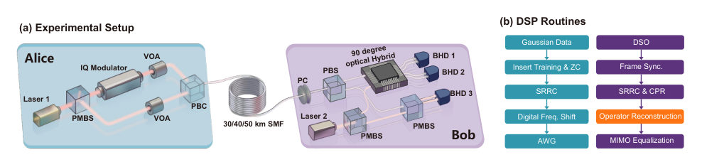
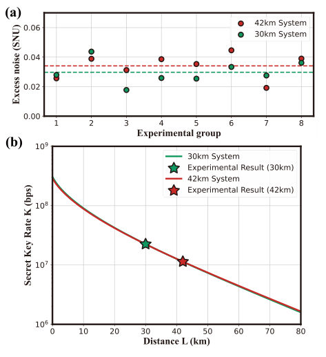
Summary. This paper addresses the security flaw in digital receivers for CV-QKD caused by image-frequency noise generated during down-conversion. The authors introduce a novel dual-path digital architecture that mathematically and physically cancels this problematic image-frequency component. This results in a robust, high-performance quantum key distribution system validated over 42 km.
Why it may be interesting. It provides a concrete, hardware-implementable solution to a fundamental security vulnerability (image-frequency leakage) in a leading quantum communication technology (CV-QKD).
Main problem. The digital down-conversion (DDC) algorithm used in continuous-variable quantum key distribution (CV-QKD) lacks rigorous quantum security analysis regarding image-frequency crosstalk.
Main result. The proposed dual-path digital receiver architecture successfully cancels the image-frequency component, achieving a high secret key rate of 11.4 Mbps over 42 km.
Method. The authors propose a novel operator reconstruction detection scheme by performing a non-equal weighted combination of output operators along two optical paths in the digital domain.
Model / system. The system is a CV-QKD setup employing digital heterodyne detection, where the quantum signal is processed through a DDC stage that introduces an image-frequency component.
Key observables. Secret Key Rate (SKR), excess noise (0.034 shot noise unit), and the cancellation of image-frequency crosstalk.
Important parameters / regimes. 42 km fiber length, 11.4 Mbps key rate, and the specific weighting factors used in the dual-path combination.
Assumptions / limitations. The reconstruction relies on the ability to coherently combine digitized I and Q signals to systematically destruct the image-frequency modes.
Figures summary. Figures illustrate the comparison between different detection architectures (Homodyne, Optical, Digital Heterodyne) and the spectral aliasing effect inherent in the DDC process.
Paper structure. The paper first identifies the security loophole in DDC, then mathematically models the frequency folding effect, proposes the dual-path reconstruction scheme, and finally validates its performance through practical experiments.
Continuous-variable quantum key distribution utilizes advanced digital signal processing techniques to mitigate channel impairments, driving the progress of high-performance quantum secure communications. Specifically, digital heterodyne receivers are commonly implemented using down-conversion algorithms to detect both components simultaneously where the signal is modulated onto an intermediate frequency to avoid low-frequency noise and bypass stringent optical phase-locking requirements. However, a rigorous analysis of the quantum security implications of the digital down-conversion algorithm remains absent. In this paper, we investigate the algorithm process from the perspective of quantum operator evolution, revealing that the frequency folding effect inherent in down-conversion inevitably mixes the image-frequency information into the baseband signal. To address this issue, we propose a novel operator reconstruction detection scheme based on dual-path digital heterodyne receiver. By performing a non-equal weighted combination of the output operators along two optical paths in the digital domain, this scheme perfectly cancels out the image-frequency operator physically. The robust receiver architecture preserves the baseband noise-suppression advantages, inherently achieves perfect mode balancing for asymmetric optical detection losses, and fundamentally closes the image-frequency crosstalk. Practical experiments have validated the feasibility of the proposed architecture and its effective suppression of image-frequency noise, achieving a performance of 11.4 Mbps @ 42 km. This work lays a solid theoretical and algorithmic foundation for future high-performance, highly secure digital continuous-variable quantum key distribution systems.
Authors: He Wang
Type: theory · Category: quantum information and computing · PDF: https://arxiv.org/pdf/2610.13110v1
Analysis basis: full PDF text, analyzed in chunks
Topic relevance: quantum measurements 3/5 · Keldysh / 2PI / non-Gaussian methods 1/5 · correlated / nonlocal dissipation 1/5 · driven-dissipative phase transition 1/5 · methods for driven-dissipative 1/5
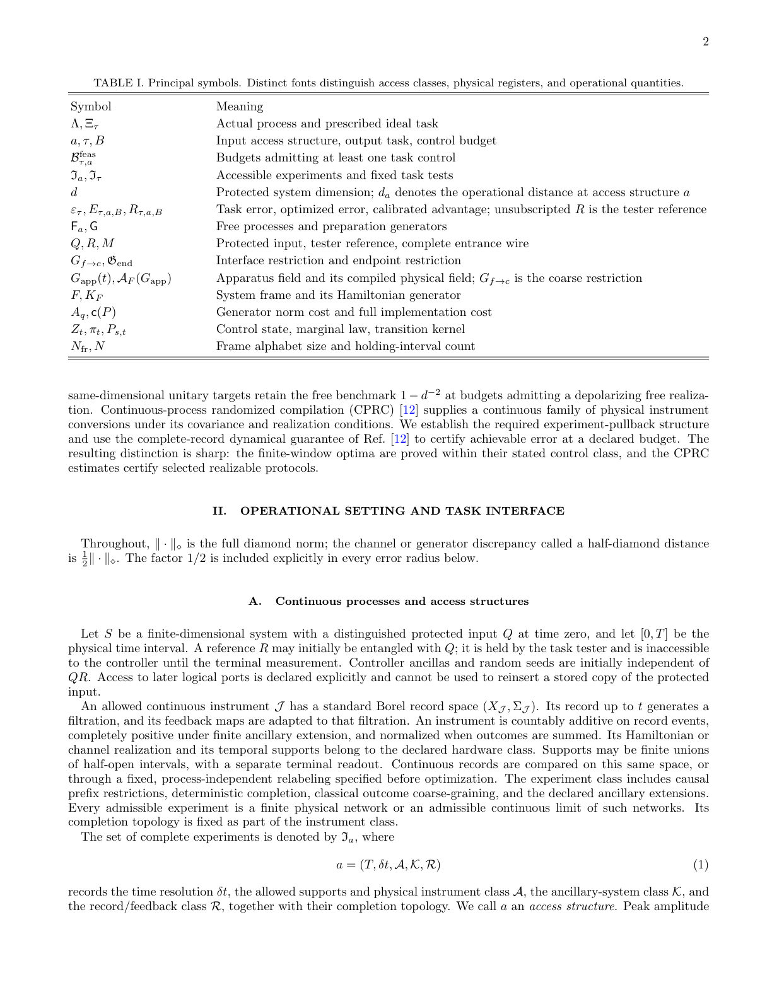
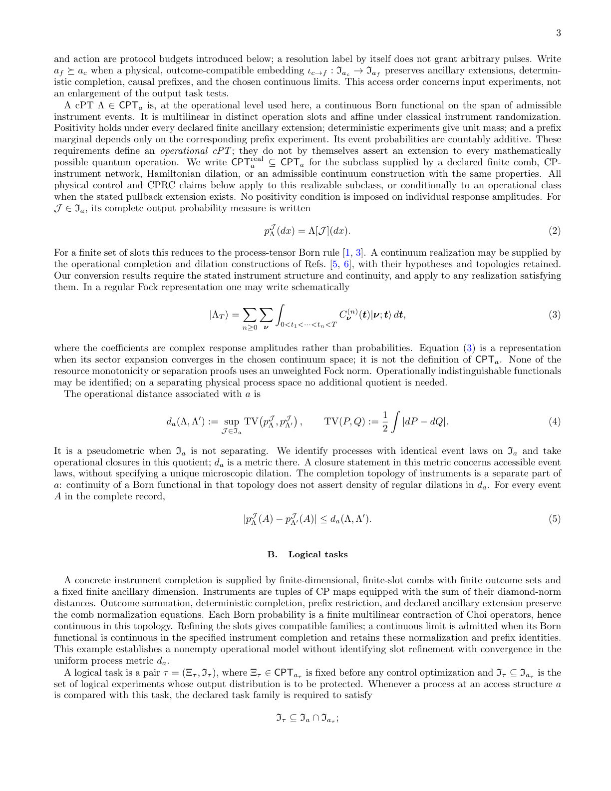
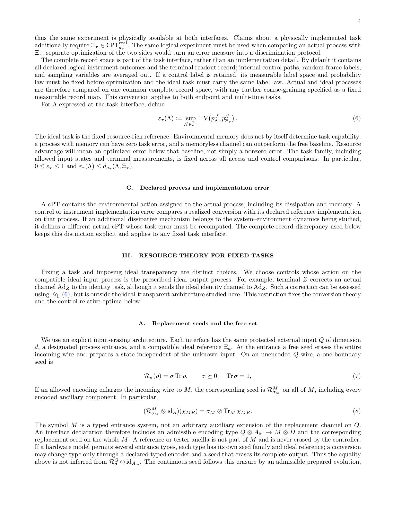
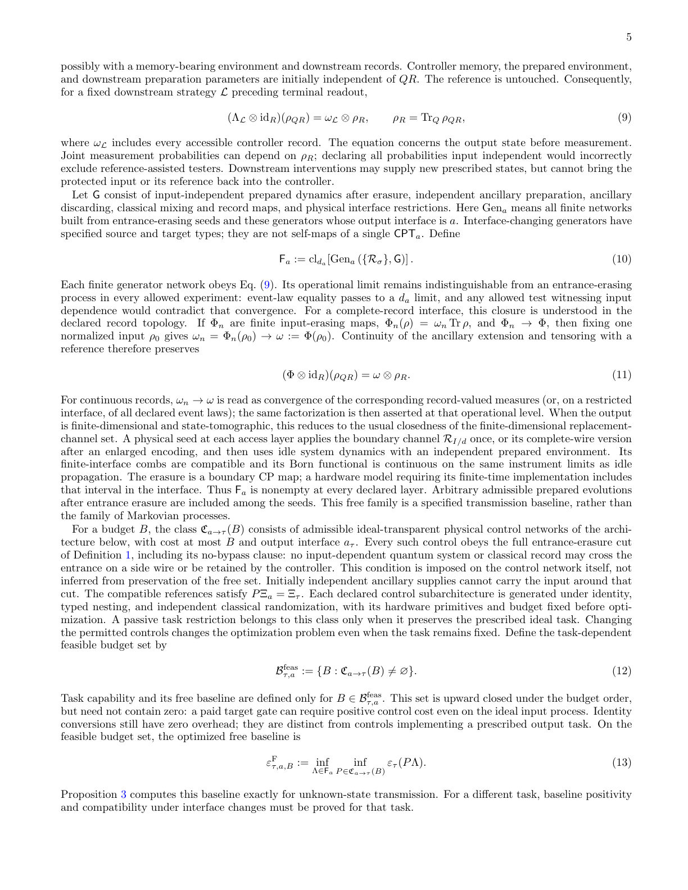
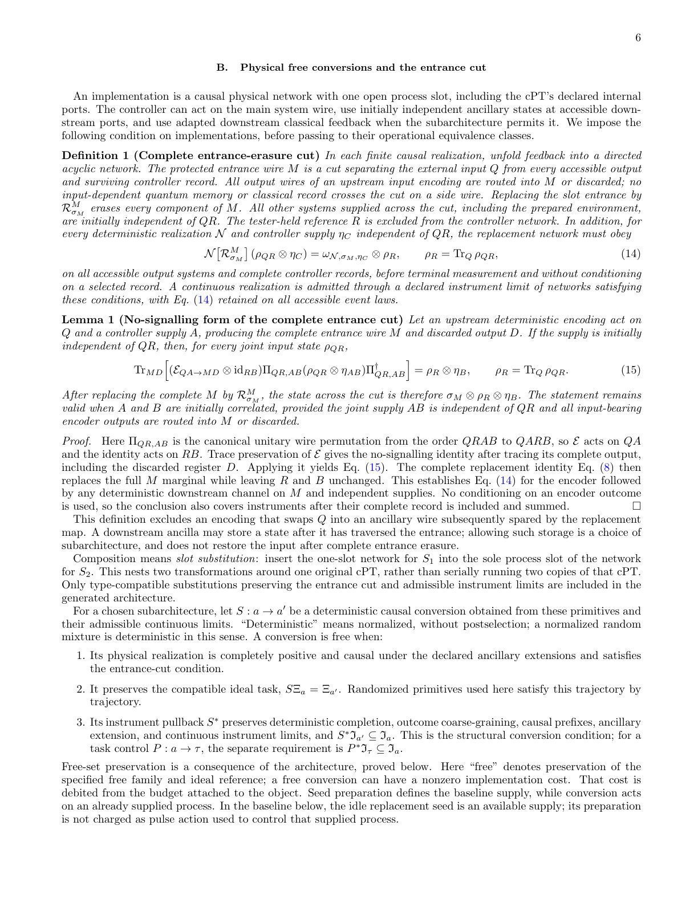
Summary. This work introduces a resource theory for continuous quantum processes that quantifies task protection under time-resolved control. It shows that simply measuring the input and output endpoints is insufficient to characterize the true capability of a quantum process. The theory provides measurable bounds that account for the internal temporal structure and control investment required for a task.
Why it may be interesting. It provides a rigorous framework for quantifying control imperfections in open quantum systems by distinguishing between what can be inferred from simple measurements versus what is achievable through active, time-dependent control.
Main problem. The paper develops a fixed-task resource theory for continuous process tensors to quantify how well a quantum process can protect a logical task under time-resolved control, addressing limitations of endpoint-only characterization.
Main result. The theory establishes that internal time controls provide task capabilities that cannot be determined solely by measuring the uncontrolled input-output endpoint channel.
Method. It uses operational distance measures based on complete experimental records and defines task error relative to an ideal, resource-rich reference task.
Model / system. The model involves continuous process tensors (cPTs) describing quantum processes with physical access interfaces, entrance-erasing free objects, and budgeted free conversions.
Key observables. Task error ($\epsilon_ au$), calibrated capability, operational distance ($d_a$), and resource advantage.
Important parameters / regimes. Control budget ($B$), time resolution ($\delta t$), and the structure of the physical access interfaces.
Assumptions / limitations. The theory relies on the assumption that the task requires protecting the internal process structure, not just the endpoints, and uses the complete-record convention.
Figures summary. Not specified (Notes refer to TABLE I listing principal symbols and access classes).
Paper structure. The paper builds the theory by defining operational distances and task errors, establishing the free baseline, and then proving separations between endpoint-only characterization and full temporal control capability.
The uncontrolled endpoint channel can conceal how well a quantum process can protect a logical task under time-resolved control. We formulate a fixed-task resource theory of continuous process tensors with physical access interfaces, entrance-erasing free objects, and budgeted free conversions. Complete-record total-variation error measures performance; the calibrated capability is monotone under conversions that preserve a common free baseline. For unknown-state transmission the baseline is exactly $1-d^{-2}$. Two qubit processes with the same endpoint channel have optimal errors $0$ and $p=\sin^2(2gh)$ at the same finite pulse budget in an ideal-transparent system-only window architecture, forcing any endpoint-only predictor to err by at least $p/2$ on one of them. An exactly solvable family shows how the allocation of a fixed interaction phase around a control window sets the attainable error, and a nontrivial perfect echo requires and attains total control action $π$ in that architecture. The separation extends directly to every qubit unitary target at a budget that includes its boundary gate, while unitary tasks in any dimension have baseline $1-d^{-2}$ whenever a budget-feasible free realization gives the depolarizing output. Complete-record implementation bounds quantify coherent and dissipative control imperfections. Continuous-process randomized compilation supplies physical instrument pullbacks; compatible completion conditions extend their action, and certified dynamical bounds yield achievable task-error and capability guarantees. The resulting theory identifies temporal structure and control investment that endpoint characterization alone cannot resolve.
Authors: Masoud Hakimi Heris, Yuan Liu, Frank Mueller
Type: theory · Category: other · PDF: https://arxiv.org/pdf/2610.13843v1
Analysis basis: full PDF text, analyzed in chunks
Topic relevance: QC/QI experiment 3/5 · analog quantum simulation 3/5
Summary. This paper proposes a novel hardware-native instruction set for trapped-ion quantum computers by utilizing the multilevel structure of individual ions as qudits. By encoding the entire electronic manifold into one ion, the authors simplify Hamiltonian mapping and demonstrate a projected ten-fold speedup over traditional qubit-based encoding for simulating complex molecular dynamics.
Why it may be interesting. This work directly addresses the hardware limitations of trapped-ion quantum computing by proposing a sophisticated, physically grounded ISA that leverages internal electronic structure, which is highly relevant for AMO physicists working on quantum simulation.
Main problem. Scaling trapped-ion quantum processors is challenging; the authors propose using the multilevel structure of individual ions (qudits) to increase computational capacity per ion.
Main result. They introduce a hardware-native instruction set for qudit-oscillator coupling, demonstrating that this approach can project a ten-fold speedup for Trotter steps compared to traditional qubit-only encoding.
Method. The work involves defining a set of hardware-native ISA primitives (e.g., qudit phase shift, level-conditioned displacement) and developing a timing model to project gate execution times.
Model / system. The system is a trapped-ion hybrid qudit-oscillator processor, coupling a general d-level internal register (qudit) to bosonic motional modes. The architecture allows the entire electronic manifold to be stored in one ion, simplifying Hamiltonian mapping.
Key observables. Average Root Mean Square Error (RMSE) of 1.1% when reproducing vibronic dynamics; projected speedup factor of ~10 for Trotter steps.
Important parameters / regimes. The system uses a $^{40} ext{Ca}^+$ qudit processor; key parameters include detunings ($\delta$) and various Rabi/drive frequencies.
Assumptions / limitations. The timing model assumes a sequential scheduling of gates, and the speedup projection relies on the qudit encoding being superior to the qubit encoding for the given task.
Figures summary. Figures conceptually illustrate the qudit-oscillator coupling within the instruction set, while tables detail the five native ISA primitives and the timing costs for qubit vs. qudit encodings.
Paper structure. The paper first introduces the qudit concept to overcome scaling limits, details the five fundamental hardware-native ISA primitives, proves the universality of a subset of these primitives, and finally validates the approach by simulating a complex vibronic dynamics problem and analyzing the resulting timing model.
Scaling trapped-ion processors by adding ions remains challenging. A complementary route exploits the multilevel internal structure of each ion to increase the computational Hilbert space per ion. We introduce a hardware-native hybrid qudit-oscillator instruction set for a general d-level internal register coupled to bosonic modes and prove that three of its native operation families suffice for universality of one qudit coupled to several modes. Adding an entangling operation between ions extends universality to a connected register of several qudits. The architecture natively supports both phase-space and sideband instruction sets and is implemented in the open-source framework HybridLane. As a representative application, we reproduce the dissipative vibronic dynamics of a three-chromophore complex previously simulated on a hybrid qubit-oscillator superconducting platform. Moving from a one-qubit-per-state register to a single qudit stores the entire electronic manifold in one ion, so every electronic coupling becomes a local intra-ion transition and the lab-frame Hamiltonian compiles directly into the ISA. Under the stated sequential timing model from a 40Ca+ qudit processor, one Trotter step is projected to run about ten times faster on the qudit, with an average RMSE of approximately 1.1 percent against the published reference.
Authors: Ashmita Das, Anjana Krishnan, Soumitra Sengupta
Type: theory · Category: other · PDF: https://arxiv.org/pdf/2610.13016v1
Analysis basis: full PDF text, analyzed in chunks
Topic relevance: quantum measurements 3/5 · Keldysh / 2PI / non-Gaussian methods 2/5 · Full counting statistics 1/5
Summary. This theoretical paper proposes using a quantum detector interacting with a scalar field to distinguish between flat and warped extra dimensions. By analyzing the resulting detector response function, the authors show that the pattern of the signal is fundamentally different for the two geometries. This provides a testable, qualitative diagnostic tool for extra-dimensional models.
Why it may be interesting. The use of a quantum detector to probe fundamental spacetime geometry differences (flat vs. warped) is a key topic in quantum gravity phenomenology, providing a concrete, measurable signature for extra dimensions.
Main problem. The paper aims to develop a quantum diagnostic tool using a Unruh-DeWitt detector to experimentally distinguish between the geometric features of flat versus warped extra dimensions.
Main result. The detector's response function exhibits distinct patterns: a smooth continuum for flat dimensions (ADD model) versus a sharp, sensitive increment for warped dimensions (RS model).
Method. The analysis computes the detector's profile function by calculating transition rates (emission/absorption) using first-order perturbation theory applied to the field's two-point correlation function.
Model / system. The system involves a two-level Unruh-DeWitt detector coupled to a bulk scalar field propagating in higher-dimensional spacetimes, specifically comparing flat (ADD) and warped (RS) geometries.
Key observables. The detector's profile function, which is sensitive to the spacing of the Kaluza-Klein (KK) mass spectrum and the detector's energy resolution.
Important parameters / regimes. The compactification radius ($R$), the energy gap of the detector ($\Delta E$), and the dimensionality of spacetime are crucial parameters.
Assumptions / limitations. The analysis assumes the gauge hierarchy problem is addressed by parameter choice, and it relies on the detector response sampling the geometry encoded in the two-point correlation function.
Figures summary. The notes mention tables summarizing the calculated mass modes for both flat and warped extra dimensions, showing dependence on parameters like the compactification radius.
Paper structure. The paper builds from general detector response calculations (including comparisons to Rindler/Minkowski backgrounds) to specific applications, deriving the response function for both flat and warped extra dimensions using KK mode summations.
We examine the response of a two level Unruh-DeWitt (UD) detector interacting with the Kaluza-Klein (KK) mass modes of a bulk scalar field in extra dimensional models. Considering two of the promising extra dimensional models with distinct compactifications, such as large, flat extra dimensions in the Arkani Hamed, Dimopoulos \& Dvali (ADD) framework and warped extra dimensions in the Randall-Sundrum (RS) scenario, we compute the profile function of the detector. We extend this computation to the 6 dimensional doubly compactified spacetime geometry. The profile function of the detector has been examined as a function of the energy gap of the detector, the compactification radius of the extra dimension, and the dimensionality of spacetime, requiring the chosen parameter space appropriately such that the gauge hierarchy problem is duly addressed. We find that the pattern of the profile function is dictated by the spacing of the KK mass spectrum and the resolution of the detector. For ADD model, the spacing between successive KK modes decreases with the increasing compactification radius, yielding a smoothly increasing continuum pattern in the profile function. Whereas for the RS warped geometry model, a tiny deviation in the radius of the extra dimension produces a large change in the same, resulting a sharp increment. The resolvability of the KK mode structure is sensitive to the underlying geometry of the spacetime, providing a qualitative distinction between flat and warped extra dimensional scenarios within the UD detector framework.
Authors: Arijit Das, Masaki Owari
Type: theory · Category: quantum information and computing · PDF: https://arxiv.org/pdf/2610.13038v1
Analysis basis: full PDF text, analyzed in chunks
Topic relevance: analog quantum simulation 3/5 · quantum measurements 2/5 · methods for driven-dissipative 1/5
Summary. This paper addresses the challenge of applying Zero-Noise Extrapolation (ZNE) error mitigation to quantum simulations performed under the indirect-control paradigm. By analyzing the 1D XY spin chain, the authors overcome the theoretical hurdles associated with noise amplification in time-evolution dominated systems. The result is a concrete, feasible error mitigation protocol that enhances the reliability of VQE calculations on hardware with limited control access.
Why it may be interesting. This work is highly relevant to AMO physics and open quantum systems because it tackles the practical limitations of simulating complex, interacting many-body systems (like spin chains) on near-term quantum hardware by combining advanced quantum control techniques (indirect-control) with necessary error mitigation protocols (ZNE).
Main problem. The paper investigates the feasibility of applying Zero-Noise Extrapolation (ZNE) error mitigation to the Variational Quantum Eigensolver (VQE) when implemented within the resource-constrained indirect-control quantum computing paradigm.
Main result. The authors propose a viable ZNE-based error mitigation strategy for indirect-control VQE by exploiting the inherent symmetry of the one-dimensional XY spin chain, despite the challenges posed by continuous time-evolution.
Method. The core method combines the indirect-control VQE framework with Zero-Noise Extrapolation (ZNE), which estimates the true zero-noise expectation value by extrapolating measurements taken at artificially increased noise levels.
Model / system. The study uses the 1D XY spin chain model ($H_{XY}$) as the physical system. The computation is performed using an indirect-control architecture, where external operations are limited to a small control unit while the rest of the system evolves under its intrinsic Hamiltonian.
Key observables. The primary observable is the energy expectation value, $E(\lambda)$, which is measured as a function of the noise parameter $\lambda$.
Important parameters / regimes. The noise parameter $\lambda$, the system Hamiltonian $H_{XY}$, and the control unit parameters $\vec{ heta}_n$ are key parameters. The minimum achievable noise level $\lambda_0$ is also critical.
Assumptions / limitations. The work assumes that the expectation value of the full system Pauli operator can be measured at the end of the circuit, and that the noisy expectation value $E(\lambda)$ can be accurately modeled as a polynomial in $\lambda$ for extrapolation.
Figures summary. Figure 1 illustrates the indirect-control architecture, distinguishing the control subsystem from the inaccessible part evolving under the drift Hamiltonian. Figure 2 shows the structure of the indirect-control VQE ansatz circuit for a five-qubit system.
Paper structure. The paper first establishes the indirect-control VQE framework, noting its advantages for NISQ devices. It then identifies the gap regarding error mitigation, specifically ZNE. The bulk of the work addresses the technical challenge of implementing ZNE (unitary folding) with continuous time-evolution, culminating in the proposed, symmetry-exploiting ZNE strategy for the 1D XY chain.
The indirect-control paradigm offers a scalable approach to quantum computation by restricting external operations to a small subset of qubits, whereas the entire system evolves under its intrinsic many-body Hamiltonian. This framework reduces hardware complexity and limits the noise introduced through control channels. Recently, Anan et al. proposed an implementation of the variational quantum eigensolver (VQE) within this indirect-control architecture. However, the impact and integration of quantum error mitigation techniques in such a setting remain largely unexplored. In particular, zero-noise extrapolation (ZNE), a widely used error mitigation strategy, has not yet been systematically adapted to indirect-control VQE. A key requirement of ZNE is the controlled amplification of noise, which is commonly achieved through circuit-level techniques such as unitary folding. In the indirect-control framework, however, quantum operations are largely governed by continuous time-evolution under the system Hamiltonian, making the construction of physically realizable inverse operations non-trivial. In this study, we investigate the feasibility of implementing ZNE within the indirect-controlVQEframework.We address the challenges associated with unitary folding in the presence of time-evolution operators and, with a minimal relaxation of the indirect-control constraint, we propose a ZNE-based error-mitigation strategy that exploits the symmetry of the one-dimensional XY spin chain.
Authors: Robert A. Grinshtein, Ivan V. Dyakonov, Stanislav S. Straupe
Type: theory · Category: quantum information and computing · PDF: https://arxiv.org/pdf/2610.12646v1
Analysis basis: full PDF text, analyzed in chunks
Topic relevance: interference shaping light 3/5 · analog quantum simulation 2/5 · quantum measurements 1/5
Summary. This paper develops methods to engineer approximate unitary t-designs in multi-photon Fock spaces using programmable linear-optical interferometers. By optimizing the interferometer structure using the frame potential, the authors demonstrate that the required physical resources scale much more favorably than previously thought. This has practical implications for building scalable quantum state preparation devices.
Why it may be interesting. This work directly addresses resource optimization in quantum optics, showing how to engineer complex quantum states (t-designs) using minimal physical controls, which is crucial for scalable photonic quantum computation.
Main problem. The primary goal is to construct unitary t-designs in a multi-photon Fock space using programmable linear-optical interferometers while minimizing the number of tunable parameters.
Main result. The study shows that shallow interferometers can accurately reproduce Haar-averaged first moments (1-designs), and the required number of parameters scales empirically as $2d$ for 1-designs, which is better than the expected $O(d^2)$.
Method. The authors use the frame potential as an optimization objective, employing advanced gradient calculations (including Weingarten calculus) to minimize the deviation from the Haar measure.
Model / system. The physical platform is a programmable linear-optical interferometer acting on a multi-photon Fock space. The unitary evolution is constructed from static mode-mixing layers (like the DFT matrix) and programmable phase-shifter layers.
Key observables. Frame Potential Loss (FPL), single-photon transition probabilities, average channel fidelities, and photon-number expectation values ($\langle \hat{n}_k angle$).
Important parameters / regimes. Number of modes ($d$), number of photons ($n$), and the order of the design ($t=1, 2$).
Assumptions / limitations. The analysis assumes the programmable interferometer architecture and relies on optimizing the system to minimize FPL below a threshold $\epsilon$.
Figures summary. Figures illustrate the interferometer schematics, the optimization workflow, and numerical results showing the minimal FPL for 1-designs across various dimensions ($d$).
Paper structure. The paper progresses from defining the problem (t-designs in Fock space) to developing the optimization framework (frame potential loss), deriving the necessary gradient formulas for $t=1$ and $t=2$, and finally applying these tools to benchmark the required physical resources.
We investigate the construction of unitary $t$-designs in a multi-photon Fock space on programmable linear-optical interferometers. Using the frame potential as the optimization objective, we identify architectures that realize approximate unitary 1- and 2-designs with considerably fewer controllable parameters than required for universal linear optics. For example, we find numerical evidence suggesting that for unitary 1-designs, the required number of programmable parameters scales empirically as $2d$ with the number of modes $d$, instead of $O(d^2)$. We benchmark the resulting ensembles using single-photon transition probabilities and average channel fidelities. Furthermore, as a practical result, we develop a photon-number estimation protocol for multi-photon Fock states that leverages these optimized 1- and 2-designs. Our findings demonstrate that shallow interferometers can accurately reproduce Haar-averaged first moments, while second-moment-sensitive observables provide a considerably stricter test for approximate unitary 2-designs.
Authors: S. V. Bolshedvorskii, E. A. Koreshin, V. V. Soshenko, I. S. Cojocaru, S. M. Drofa, P. G. Vilyuzhanina, N. I. Salangin, A. M. Kozodaev, A. Chernyavskiy, A. N. Smolyaninov, P. V. Kapitanova, S. Ya. Kilin, A. V. Akimov
Type: experiment · Category: other · PDF: https://arxiv.org/pdf/2610.13379v1
Analysis basis: full PDF text, analyzed in chunks
Topic relevance: QC/QI experiment 3/5 · quantum measurements 3/5
Summary. This paper presents the design and experimental realization of a compact, hand-held vector magnetometer based on NV centers in diamond. The key innovation is a planar microwave resonator that efficiently drives the multiple resonance orientations required for full vector measurement over a wide frequency band. The resulting device achieves a sensitivity of 1.2 nT/sqrt(Hz), making it a practical tool for mobile magnetic sensing applications.
Why it may be interesting. This work directly applies principles of quantum sensing using solid-state defects (NV centers) and requires detailed knowledge of microwave engineering and quantum Hamiltonian analysis, making it highly relevant to AMO physics.
Main problem. The goal is to develop a compact, hand-held vector magnetometer using Nitrogen-Vacancy (NV) centers in diamond that can efficiently measure the magnetic field vector across multiple orientations.
Main result. The authors successfully fabricated and tested a planar microwave resonator design that enables broadband, uniform driving of the NV centers, achieving a device sensitivity of about 1.2 nT/sqrt(Hz).
Method. The study involves designing and optimizing a planar microwave resonator topology (specifically Topology 3) to generate a uniform, broadband microwave magnetic field, which is then used to measure the NV center's spin resonance frequencies via ODMR spectroscopy.
Model / system. The physical system is the NV color center in diamond, whose spin Hamiltonian is analyzed. The measurement relies on the vector magnetometry protocol, which interrogates four distinct ODMR peaks corresponding to different crystallographic orientations.
Key observables. Magnetic field vector components ($\mathbf{B}$), resonance frequencies ($f_i$), and the final measured sensitivity ($1.2 ext{ nT}/\sqrt{ ext{Hz}}$).
Important parameters / regimes. 100 MHz bandwidth, 0.5 W microwave input power, and the planar resonator's low Q-factor design.
Assumptions / limitations. The primary assumption is that the planar resonator can provide a sufficiently uniform and broadband microwave field to excite all necessary NV orientations simultaneously for vector measurement.
Figures summary. Figures illustrate the comparison of three resonator topologies, showing simulated reflection coefficients, magnetic field amplitudes, and uniformity histograms, culminating in the selection of the best performing planar design.
Paper structure. The paper progresses from identifying the need for a broadband resonator for vector magnetometry, through simulating and comparing multiple resonator topologies, to fabricating the optimal planar design and finally demonstrating the measurement protocol and sensitivity.
The nitrogen-vacancy (NV) color center in diamond has found applications in magnetometry across various geometrical scales. In particular, vector magnetometry using hand-held devices with low power consumption is of interest for mobile and geological applications. However, such a device requires efficient driving of the four different orientations of the NV center, thus placing demands on a broadband microwave resonator that provides a uniform and highly insensitive microwave magnetic field at the resonance frequencies of the NV centers. Here, we propose a unique planar resonator design that enables efficient driving of all four orientations of NV color centers over a 100 MHz range with only 0.5 W of microwave input power and 250 mW of laser power, allowing vector magnetic field measurements. Using the planar resonator to drive NV centers in diamond, a compact vector magnetometer was fabricated and experimentally studied. The sensitivity of the device is about \[{1.2\text{ nT}}/{\sqrt{\text{Hz}}}\;\]. While this is not a record sensitivity for diamond-based magnetometers, this device occupies its own niche as a compact hand-held magnetometer.
Authors: Daiki Sasamoto, Joji Nasu
Type: theory · Category: strongly correlated electrons · PDF: https://arxiv.org/pdf/2610.13401v1
Analysis basis: full PDF text, analyzed in chunks
Topic relevance: Keldysh / 2PI / non-Gaussian methods 3/5 · analog quantum simulation 1/5 · methods for driven-dissipative 1/5
Summary. This paper develops a finite-temperature parton mean-field theory to study spin dynamics in extended Kitaev models, which are relevant to real magnetic materials. By incorporating non-Kitaev interactions via the RPA, the authors calculate the dynamical spin structure factor. The results confirm the model's ability to capture complex phenomena like spectral weight shifts and spinon-to-magnon crossovers in the presence of thermal fluctuations.
Why it may be interesting. The framework developed for calculating finite-temperature dynamics in highly correlated magnetic systems provides a powerful, non-perturbative tool for understanding fractionalized excitations beyond simple mean-field treatments.
Main problem. Calculating the finite-temperature dynamics of spin excitations in extended Kitaev models, especially when non-Kitaev interactions break integrability.
Main result. The theory successfully reproduces characteristic features of the pure Kitaev model and predicts a spinon-to-magnon crossover in the presence of additional interactions.
Method. The authors develop a finite-temperature parton mean-field theory utilizing the Abrikosov-fermion representation and incorporate interaction effects via the Random Phase Approximation (RPA).
Model / system. The study focuses on extended Kitaev models on lattices like the honeycomb lattice, incorporating Kitaev, Heisenberg, and $\Gamma$ interactions, and considering external magnetic fields.
Key observables. Dynamical spin structure factor S(q, omega), low-energy spectral weight, and static magnetic response softening.
Important parameters / regimes. Temperature (T), magnetic field strength (h), and the relative strengths of Kitaev, Heisenberg, and $\Gamma$ couplings.
Assumptions / limitations. The primary approximation is the use of the parton mean-field theory combined with the Random Phase Approximation (RPA) to handle non-integrable, finite-temperature dynamics.
Figures summary. Not specified in detail, but the context implies figures illustrating the lattice structure, parameter phase diagrams, and spectral functions.
Paper structure. The paper establishes the Kitaev model as a benchmark, identifies the difficulty posed by non-Kitaev interactions, introduces the Abrikosov-fermion/RPA framework, validates it against the pure Kitaev case, and then applies it to extended models to study crossovers and instabilities.
The $S=1/2$ Kitaev model provides an exactly solvable setting in which spin fractionalization produces itinerant Majorana fermions coupled to an emergent $\mathbb{Z}_2$ gauge field. In realistic Kitaev magnets, however, non-Kitaev interactions break integrability and make their finite-temperature dynamics difficult to calculate. We develop a finite-temperature parton mean-field theory based on the Abrikosov-fermion representation and incorporate the effects of exchange interactions through the random phase approximation to calculate the dynamical spin structure factor. For the pure Kitaev model, the method reproduces a strong, nearly dispersionless peak at a finite low energy together with a broad continuum at higher energies. It also reproduces the momentum dependence of the dynamical spin structure factor and its temperature evolution, including the downward shift of the low-energy spectral weight, in qualitative agreement with continuous-time quantum Monte Carlo calculations. Within the present theory, the contraction of the continuum is traced to the temperature-induced reduction of the bond amplitudes, which narrows the parton bands and compresses the two-parton phase space. For ferromagnetic Kitaev coupling, the energy of the low-energy peak is minimized at the $Γ$ point for a ferromagnetic Heisenberg interaction and maximized there for an antiferromagnetic interaction. In the ferromagnetic Kitaev-$Γ$ model, the static response develops a finite-momentum softening, indicating an instability toward the period-three magnetic order reported in numerical studies. For uniform-ferromagnetic states selected by a $[111]$ magnetic field, we find that a broad parton continuum coexists with magnonlike dispersive structures, producing spectral features consistent with a spinon-to-magnon crossover.
← Index · ← Previous · Next →